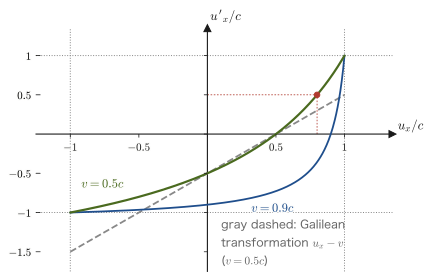
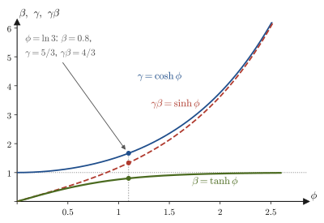

Chapter 56Minkowski Spacetime — Relativity of Simultaneity and Proper Time
In high school physics, the “composition of velocities” was a matter of simple addition and subtraction, as in $u'=u-v$ for a ball thrown inside a moving train. In the previous two chapters we saw that this addition does not hold for light and is replaced by the Lorentz transformation (Section 54.5). Then the addition of velocities must be rebuilt as well. In the previous chapter we derived the velocity transformation law (Theorem 55.4) and confirmed that, however speeds are combined, the result never exceeds the speed of light $c$. In this chapter we recast that calculation in the form of “the transformation of the differences between the coordinates of two events” and make it the starting point for the discussions that follow.
Next, we examine how, because of the second term of the time formula $t'=\gamma(t-vx/c^2)$, two events that occur “simultaneously” in frame S are no longer simultaneous in frame S′; in other words, simultaneity is not absolute. This is the most direct manifestation of the fact that time and space mix together to form a single “spacetime.” We therefore draw a spacetime diagram (Minkowski diagram), with position $x$ on the horizontal axis and $ct$ on the vertical axis, and represent motion by “world lines” and the propagation of light by the “light cone.” It resembles the high school $x$–$t$ graph, but a new convention is added: the coordinate axes of frame S′ are tilted.
From the spacetime diagram emerges the invariant interval $s^2=c^2t^2-x^2-y^2-z^2$, which does not change when the coordinate system is changed. Its sign determines whether two events can be cause and effect (whether they can be causally related). We also define the time ticked off by a moving clock, the proper time $\dd\tau=\dd t/\gamma$, from the invariant interval, and solve the famous twin paradox with a spacetime diagram and concrete numbers. Finally, using the rapidity, which plays the role of an “angle” for speed, we see that the Lorentz transformation is a “rotation of spacetime” expressed not by trigonometric functions but by hyperbolic functions ($\cosh,\sinh,\tanh$, which we learned in AD 02).
The content of this chapter is the geometric foundation for moving on to four-vectors and relativistic dynamics ($E=mc^2$) in the next chapter, Chapter 57.
- Deriving the transformation of the coordinate differences of two events (Theorem 56.1) from the fact that the Lorentz transformation is linear. Its relation to the velocity transformation law of the previous chapter, the composition of velocities in the same direction, and the aberration of light
- The relativity of simultaneity: from $\Delta t'=\gamma(\Delta t-v\Delta x/c^2)$, even if $\Delta t=0$, we have $\Delta t'\neq0$ whenever $\Delta x\neq0$. Einstein's train thought experiment
- How to draw a spacetime diagram (Minkowski diagram): why the vertical axis is taken to be $ct$, world lines, the light cone, the tilt of the coordinate axes of frame S′, and lines of simultaneity
- The invariant interval $s^2=c^2t^2-x^2-y^2-z^2$ and the proof of its invariance under the Lorentz transformation. Timelike, spacelike, and lightlike intervals, and their relation to causality
- Proper time $\dd\tau=\dd t/\gamma$, and $\tau=\int\dd t/\gamma(t)$ (when the velocity varies). Its relation to time dilation $\Delta t=\gamma\Delta\tau$
- Solving the twin paradox with a spacetime diagram and numbers. Where the asymmetry lies (which twin switched inertial frames)
- The rapidity $\tanh\phi=\beta$ and the Lorentz transformation as a hyperbolic rotation. The additivity of rapidity (its relation to the velocity addition law)
Related notes: Yasuhide Mochizuki, Physics Notes: Special Relativity, pp. 3–4, 9.
56.1 Transformation of Coordinate Differences and the Velocity Addition Law
Velocity is “change in position ÷ change in time,” so under the Lorentz transformation we must take into account that not only the position but also the change in time differs from one coordinate system to another. In Section 55.6 of the previous chapter, we differentiated the Lorentz transformation with respect to time and derived the velocity transformation law (Theorem 55.4), including the components perpendicular to the direction of motion. In this section we revisit that calculation in the form of “the transformation of the differences between the coordinates of two events.” The transformation of differences (Theorem 56.1) is the common starting point for simultaneity (Section 56.2), spacetime diagrams (Section 56.3), the invariant interval (Section 56.4), and proper time (Section 56.5). After that, as applications of the velocity transformation law, we examine the composition of velocities in the same direction and the aberration of light.
The setup and notation are the same as in Chapters 54 and 55. Frame S′ moves relative to frame S in the positive direction of the $x$ axis at a constant speed $v\ [\mathrm{m/s}]$ (the origins coincide at $t=t'=0$, and the axes are parallel to each other; Section 54.5), and the velocity of the particle (point mass) is written $\bm{u}=(u_x,u_y,u_z)=(\dd x/\dd t,\ \dd y/\dd t,\ \dd z/\dd t)$ in frame S and $\bm{u}'=(u'_x,u'_y,u'_z)=(\dd x'/\dd t',\ \dd y'/\dd t',\ \dd z'/\dd t')$ in frame S′ (this is distinct from the notation $u^\mu$ for the four-velocity; see Chapter 57).
56.1.1 The Lorentz transformation of coordinate differences
Let us write down the Lorentz transformation (Chapter 54) once more here.
\begin{equation} x'=\gamma\,(x-vt),\qquad y'=y,\qquad z'=z,\qquad t'=\gamma\left(t-\frac{v}{c^2}x\right),\qquad \gamma=\frac{1}{\sqrt{1-(v/c)^2}} \label{eq:56-lorentz} \end{equation}This transformation is a first-degree expression (a linear transformation) in $x,t$. Therefore, the “differences” between the coordinates of two events $\mathrm{P}_1$ $(t_1,x_1,y_1,z_1)$ and $\mathrm{P}_2$ $(t_2,x_2,y_2,z_2)$ also transform by equations of the same form. Here an event is a happening specified by the spacetime coordinates of a single point—“when and where” it occurred (for example, “a flash of light was emitted at position $x_1$ at time $t_1$”).
Theorem 56.1: Transformation of coordinate differences
If we write the differences between the coordinates of two events as $\Delta t=t_2-t_1$, $\Delta x=x_2-x_1$, $\Delta y=y_2-y_1$, $\Delta z=z_2-z_1$ (and likewise for the differences $\Delta t',\Delta x',\Delta y',\Delta z'$ in frame S′), then the following hold:
\begin{equation} \Delta x'=\gamma\,(\Delta x-v\Delta t),\qquad \Delta y'=\Delta y,\qquad \Delta z'=\Delta z,\qquad \Delta t'=\gamma\left(\Delta t-\frac{v}{c^2}\Delta x\right) \label{eq:56-delta} \end{equation}For the infinitesimal quantities $\dd t,\dd x,\dd y,\dd z$, obtained by taking the differences infinitely small, exactly the same equations hold: $\dd x'=\gamma(\dd x-v\dd t)$, $\dd t'=\gamma(\dd t-v\dd x/c^2)$, $\dd y'=\dd y$, $\dd z'=\dd z$.
Proof
Apply Eq. \eqref{eq:56-lorentz} to $\mathrm{P}_2$ and $\mathrm{P}_1$ separately and subtract. For $x'$, for example, $x'_2=\gamma(x_2-vt_2)$ and $x'_1=\gamma(x_1-vt_1)$, so
$$ \Delta x'=x'_2-x'_1=\gamma\,(x_2-vt_2)-\gamma\,(x_1-vt_1)=\gamma\,\bigl\{(x_2-x_1)-v\,(t_2-t_1)\bigr\}=\gamma\,(\Delta x-v\Delta t) $$(since $\gamma$ and $v$ are constants, they could be factored out). Similarly for $t'$, $\Delta t'=\gamma\{(t_2-t_1)-\frac{v}{c^2}(x_2-x_1)\}=\gamma\,(\Delta t-v\Delta x/c^2)$. From $y'=y,\ z'=z$ we obtain $\Delta y'=\Delta y,\ \Delta z'=\Delta z$ directly. For infinitesimal quantities, we need only read $\Delta\to\dd$ (for a first-degree expression, even if we regard $x'$ as a function of the two variables $x,t$ and take the total differential, we obtain the same result, $\dd x'=\pdiff{x'}{x}\dd x+\pdiff{x'}{t}\dd t=\gamma\,\dd x-\gamma v\,\dd t$; University Mathematics, Section 6.4).
∎
Intuition: Why we use “coordinate differences” rather than “coordinates”
The values of the “time $t$” and the “position $x$” themselves depend on how the origin and the clocks are set. On the other hand, “the time difference $\Delta t$ and the distance difference $\Delta x$ from one event to another” can be measured in any coordinate system. The differences in how the clocks are set and how the origin is chosen cancel out when we take differences. All the discussions from this section on (velocity, simultaneity, the invariant interval) start from Eq. \eqref{eq:56-delta}.
56.1.2 Relation to the velocity transformation law
Suppose a particle is moving and its trajectory $x(t),y(t),z(t)$ is given in frame S. Let us apply Theorem 56.1 (in its infinitesimal form) to two neighboring events on the trajectory—the two points where the particle is located at time $t$ and at time $t+\dd t$. By the definition of velocity, the coordinate differences in frame S are $\dd x=u_x\dd t$, $\dd y=u_y\dd t$, $\dd z=u_z\dd t$. Substituting these, we obtain
\begin{equation} \dd x'=\gamma\,(u_x-v)\,\dd t,\qquad \dd t'=\gamma\left(1-\frac{v\,u_x}{c^2}\right)\dd t,\qquad \dd y'=u_y\,\dd t,\qquad \dd z'=u_z\,\dd t \label{eq:56-dxdt-prime} \end{equation}The velocity in frame S′ is the change in position measured in S′ divided by the change in time measured in S′, so if we take the ratios in Eq. \eqref{eq:56-dxdt-prime} and cancel the common $\dd t$, exactly the same calculation as the derivation in Section 55.6.2 of the previous chapter gives the following result ($1/\gamma=\sqrt{1-v^2/c^2}$).
Conversely, since the velocity of S as seen from S′ is $-v$, the equations that give the velocity in frame S from the velocity in frame S′ are obtained by replacing $v\to-v$:
\begin{equation} u_x=\frac{u'_x+v}{1+\dfrac{v\,u'_x}{c^2}},\qquad u_y=\frac{u'_y\sqrt{1-v^2/c^2}}{1+\dfrac{v\,u'_x}{c^2}},\qquad u_z=\frac{u'_z\sqrt{1-v^2/c^2}}{1+\dfrac{v\,u'_x}{c^2}} \label{eq:56-vel-inv} \end{equation}The detailed checks made along the way in the derivation—why the components $u_y,u_z$ perpendicular to the direction of motion also change, that for $v\ll c$ the result returns to the Galilean transformation (the high school addition of velocities), that the speed of light does not change, and that no composition of velocities exceeds $c$ (Theorem 55.5)—are given in Section 55.6 of the previous chapter. What is newly important in this section is the second equation of Eq. \eqref{eq:56-dxdt-prime}: the advance $\dd t'$ of the clock of frame S′ differs from the advance $\dd t$ of the clock of frame S by the factor $\gamma(1-vu_x/c^2)$ (this is the product of the time dilation factor $\gamma$ and the factor $1-vu_x/c^2$ for the shift in simultaneity; it is used again in Section 56.5 on proper time).
The behavior of the velocity transformation is shown in Figure 56.1. The Galilean transformation $u'_x=u_x-v$ is a straight line, but the curve of the Lorentz velocity transformation passes through $u'_x=\pm c$ at $u_x=\pm c$ and stays between $-c$ and $c$.

56.1.3 Composition of velocities in the same direction and the aberration of light
Let us look at two applications of the velocity transformation law. The first is the composition of motions in the $x$ direction only. Suppose S′ moves in the $x$ direction at speed $\beta_1c$ relative to S, and an object moves in the same $x$ direction at speed $\beta_2c$ relative to S′. Setting $v=\beta_1c$ and $u'_x=\beta_2c$ in the inverse transformation \eqref{eq:56-vel-inv}, we find that the speed $\beta c$ of the object in frame S is
\begin{equation} \beta=\frac{\beta_1+\beta_2}{1+\beta_1\beta_2} \label{eq:56-beta-add} \end{equation}($\beta_1,\beta_2$ are numbers between $-1$ and $1$). The term $\beta_1\beta_2$ in the denominator produces the deviation from the Galilean sum $\beta_1+\beta_2$. That $\abs{\beta}\lt1$ can be confirmed by factoring, $1-\beta=(1-\beta_1)(1-\beta_2)/(1+\beta_1\beta_2)$ and $1+\beta=(1+\beta_1)(1+\beta_2)/(1+\beta_1\beta_2)$, in which all the numerators and denominators are positive (the same calculation as Exercise 55.5 of the previous chapter). For example, for $\beta_1=\beta_2=0.5$ we have $\beta=1.0/1.25=0.8$, which does not reach the speed of light (for a numerical example, see Example 55.13 of the previous chapter). With the rapidity of Section 56.7, this composition law becomes the simple addition $\phi=\phi_1+\phi_2$.
The second is the transformation of the direction in which light travels, that is, the aberration of light. In the following example, we transform light traveling in an arbitrary direction by means of Eq. \eqref{eq:56-vel}.
Example 56.1: Light in an arbitrary direction and the aberration of light
(a) In frame S, the velocity of light traveling in the direction at angle $\theta$ to the $x$ axis is $\bm{u}=(c\cos\theta,\ c\sin\theta,\ 0)$. Find the velocity $\bm{u}'$ in frame S′, confirm that its magnitude is $c$, and show that for the angle $\theta'$ of the direction of travel in frame S′ (the angle with the $x'$ axis), $\cos\theta'=\dfrac{\cos\theta-\beta}{1-\beta\cos\theta}$. (b) The Earth (frame S′) moves at its orbital speed $v=29.8\ \mathrm{km/s}$ relative to the Sun (frame S; regarded as at rest with respect to distant stars). By how much is the light of a star falling toward the Earth from directly above, relative to the Sun (the negative $y$ direction, $\theta=-90^\circ$), tilted as seen from the Earth (the aberration of light)? Take $c=2.998\times10^8\ \mathrm{m/s}$.
Solution. (a) Substitute $u_x=c\cos\theta$, $u_y=c\sin\theta$, $u_z=0$ into Eq. \eqref{eq:56-vel}. Letting $D=1-\beta\cos\theta$, we have
$$ u'_x=\frac{c\cos\theta-v}{D}=c\,\frac{\cos\theta-\beta}{1-\beta\cos\theta},\qquad u'_y=\frac{c\sin\theta\sqrt{1-\beta^2}}{D}=c\,\frac{\sin\theta}{\gamma\,(1-\beta\cos\theta)} $$Let us check the magnitude. We have $(u'_x)^2+(u'_y)^2=\dfrac{c^2}{D^2}\bigl\{(\cos\theta-\beta)^2+(1-\beta^2)\sin^2\theta\bigr\}$, and the expression inside the braces is
$$ \cos^2\theta-2\beta\cos\theta+\beta^2+\sin^2\theta-\beta^2\sin^2\theta=1-2\beta\cos\theta+\beta^2\cos^2\theta=(1-\beta\cos\theta)^2=D^2 $$(we used $\sin^2\theta+\cos^2\theta=1$ and $\beta^2-\beta^2\sin^2\theta=\beta^2\cos^2\theta$). Therefore $(u'_x)^2+(u'_y)^2=c^2$; that is, the speed is $c$. From $u'_x=c\cos\theta'$, the direction of travel satisfies $\cos\theta'=(\cos\theta-\beta)/(1-\beta\cos\theta)$.
(b) For $\theta=-90^\circ$: since $\cos\theta=0$ and $\sin\theta=-1$, we get $u'_x=-v$ and $u'_y=-c/\gamma$. As seen from the Earth, the light does not come straight down but has a velocity component in the $-x$ direction (the starlight appears to come from ahead, in the direction of the Earth's motion). The tilt angle $\alpha$ (the deviation from the $-y$ direction) satisfies $\sin\alpha=\abs{u'_x}/c=\beta$, and since $\beta=29.8\times10^3/(2.998\times10^8)=9.94\times10^{-5}$, we have $\alpha\approx\beta=9.94\times10^{-5}\ \mathrm{rad}$. Using $1\ \mathrm{rad}=206\,265''$,
$$ \alpha\approx9.94\times10^{-5}\times206\,265''\approx20.5'' $$that is, about $20.5$ arcseconds. Half a year later, when the Earth's motion is reversed, the tilt is reversed as well, so with a period of one year the apparent position of the star traces a circle or an ellipse within this range of angles. This phenomenon is called the aberration of light, and it was discovered by Bradley in the first half of the 18th century.
56.2 The Relativity of Simultaneity
When we said in high school physics that “two events occurred at the same time,” we believed, almost without being aware of it, that this had the same meaning for everyone. For example, “the accident that occurred in Tokyo at 3 p.m. and the accident that occurred in Osaka at 3 p.m. are simultaneous.” The Galilean transformation $t'=t$ is precisely this belief written as a formula. However, the time equation of the Lorentz transformation, $t'=\gamma\,(t-vx/c^2)$, contains not only $t$ but also the position $x$. In this section we examine the consequence head-on. Two events that occur simultaneously in one coordinate system are not simultaneous in another—simultaneity is relative, determined separately for each coordinate system.
Intuition: The procedure that defines “simultaneous”
What does it mean, to begin with, for events at two distant points A and B to be “simultaneous”? We learn of a distant event only when light (or a similar signal) from it arrives. So Einstein made the following definition. Place an observer at the midpoint M of A and B. If the flash that went off at A and the flash that went off at B reach M at exactly the same moment, then the events at A and B are simultaneous (in this observer's coordinate system). It is the fact that the speed of light is the same in every direction (the principle of the constancy of the speed of light) that makes this definition possible. The train thought experiment in Section 56.2.2 below starts from this definition.
56.2.1 A shift in simultaneity seen from the Lorentz transformation
Let the differences between the coordinates of two events A and B be $\Delta t=t_B-t_A$ and $\Delta x=x_B-x_A$ in frame S, and $\Delta t'=t'_B-t'_A$ in frame S′. By Theorem 56.1 of the previous section (Eq. \eqref{eq:56-delta}),
\begin{equation} \Delta t'=\gamma\left(\Delta t-\frac{v}{c^2}\Delta x\right) \label{eq:56-simul} \end{equation}holds. Even if the events are simultaneous in frame S ($\Delta t=0$), as long as the two points are apart ($\Delta x\neq0$), we have
\begin{equation} \Delta t'=-\gamma\,\frac{v\,\Delta x}{c^2}\neq0 \label{eq:56-simul-shift} \end{equation}This is the relativity of simultaneity.
Theorem 56.2: Relativity of simultaneity
Two events that occur simultaneously ($\Delta t=0$) at different places ($\Delta x\neq0$) in one inertial frame of reference are not simultaneous in an inertial frame moving relative to it with speed $v\neq0$ in the $x$ direction. The time difference is $\Delta t'=-\gamma v\Delta x/c^2$, and in frame S′ the event located on the side in the direction of motion (the $+x$ side) is the one that occurs first. Conversely, two events that are not simultaneous in frame S can be simultaneous in frame S′ (the condition for $\Delta t'=0$ is $\Delta t=v\Delta x/c^2$).
Caution: “Simultaneous” is a word whose meaning is fixed separately in each coordinate system
For two events to be “simultaneous” in frame S′ means that $t'_A=t'_B$ holds, which is not the same thing as $t_A=t_B$ holding (simultaneous in frame S). As the Lorentz transformation $t'=\gamma(t-vx/c^2)$ shows, even if $t_A=t_B$, we have $t'_A\neq t'_B$ whenever $x_A\neq x_B$. For the same pair of events, the answer to “simultaneous or not?” may differ from one coordinate system to another. This is why, when deriving the Lorentz contraction, it was important to measure the positions of the two ends of the rod “at the same time $t'$ in frame S′” (Section 55.1). Note also that if $\Delta x=0$ then $\Delta t'=\gamma\Delta t$, so whether the events are simultaneous ($\Delta t=0$) is the same in every coordinate system moving in the $x$ direction (moreover, if $\Delta y=\Delta z=0$ as well, the two events are one and the same event, so asking whether they are simultaneous has no meaning in the first place).
Let us estimate the magnitude of Eq. \eqref{eq:56-simul-shift}. Since $c^2$ is enormous, that magnitude is almost zero at everyday speeds (Example 56.4). The shift in simultaneity is invisible merely because $v/c$ is small.
56.2.2 Einstein's train thought experiment
The relativity of simultaneity can be understood directly, from the principle of the constancy of the speed of light alone, through the following famous thought experiment (the train thought experiment that Einstein used in his popular exposition, slightly modified into the form often used in textbooks).
Consider a long train running along a straight track at a constant speed $v$. A light source at the center of the train emits a flash at some instant. The light travels toward the front end and the rear end of the train. To an observer riding on the train (frame S′), the light travels forward and backward at the same speed $c$, and both ends are at the same distance $L/2$ from the source ($L$ is the rest length of the train), so the light reaches the front end and the rear end simultaneously (panel (a) of Figure 56.2).
But to an observer standing beside the track (frame S), the situation is different. The speed of light is $c$ in every direction, even if the source is moving (the principle of the constancy of the speed of light). Meanwhile, the rear end of the train moves toward the oncoming light, and the front end moves away as if fleeing from the light. Therefore the light reaches the rear end first and the front end later (panel (b) of the figure). For the observer on the ground, the two events “the light reaches the rear end” and “the light reaches the front end” are not simultaneous.
It is meaningless to ask which observer's conclusion is “correct.” Each is a correct conclusion, obtained in that observer's own coordinate system with the speed of light $c$ and his or her own ruler and clock, and each is a manifestation of the fact that simultaneity differs from one coordinate system to another. Next, let us confirm this conclusion quantitatively using the Lorentz transformation.
Derivation: The difference between the two arrival times as seen from the ground
Take the event E, in which the light source at the center of the train emits the flash, as the origin of both coordinate systems ($x'=0,\ t'=0$ in frame S′; $x=0,\ t=0$ in frame S as well). If the rest length of the train is $L$, then in frame S′ the front end is at $x'=+L/2$ and the rear end at $x'=-L/2$. Using the time $L/(2c)$ that the light takes to travel the distance $L/2$, the coordinates in frame S′ of the events F (the light reaches the front end) and R (the light reaches the rear end) are
$$ \text{F:}\ x'=\frac{L}{2},\quad ct'=\frac{L}{2},\qquad\qquad \text{R:}\ x'=-\frac{L}{2},\quad ct'=\frac{L}{2} $$Since $t'=L/(2c)$ for both, they are simultaneous. Substituting into the inverse transformation (Eq. \eqref{eq:56-lorentz} with $v\to-v$) $t=\gamma(t'+vx'/c^2)$, that is, $ct=\gamma(ct'+\beta x')$, gives the times in frame S:
\begin{align} ct_{\mathrm F}&=\gamma\left(\frac L2+\beta\frac L2\right)=\gamma\,\frac L2\,(1+\beta),\qquad ct_{\mathrm R}=\gamma\left(\frac L2-\beta\frac L2\right)=\gamma\,\frac L2\,(1-\beta) \label{eq:56-train-times} \end{align}Since $\beta\gt0$, we have $t_{\mathrm R}\lt t_{\mathrm F}$; that is, on the ground the rear end comes first. The time difference is
\begin{equation} \Delta t=t_{\mathrm F}-t_{\mathrm R}=\frac{\gamma L\beta}{c}=\frac{\gamma\,L\,v}{c^2} \label{eq:56-train-dt} \end{equation}(dimension: $\mathrm{m\cdot(m/s)/(m/s)^2=s}$, which is a time). We can also check that this result agrees with Eq. \eqref{eq:56-simul}. From $x=\gamma(x'+vt')$, the difference between the positions of F and R in frame S is $\Delta x=x_{\mathrm F}-x_{\mathrm R}=\gamma\left\{\frac L2(1+\beta)-\left(-\frac L2(1-\beta)\right)\right\}=\gamma L$ (the distance measured in frame S appears to be $\gamma L$ not only because of the contracted length $L/\gamma$ of the train but also because the times of the two events are shifted), and when $\Delta t'=0$ in frame S′, Eq. \eqref{eq:56-simul} gives $\Delta t=v\Delta x/c^2=v\gamma L/c^2$, which agrees with Eq. \eqref{eq:56-train-dt}.
∎
Discussion: Agreement with the direct argument of the ground observer
Eq. \eqref{eq:56-train-times} agrees with the result that an observer in frame S obtains directly by reasoning that “the speed of light is $c$ and the length of the train is Lorentz-contracted to $L_{\mathrm g}=L/\gamma$.” In frame S, at time $0$ the front end is at $x=L_{\mathrm g}/2$ and the rear end at $-L_{\mathrm g}/2$ (the source is at the origin); the front end flees at speed $v$ and the rear end approaches at speed $v$. The light reaches the rear end when $ct=-L_{\mathrm g}/2+vt$ (the position of the rear end) $=-ct$ (the position of the light), which gives $t_{\mathrm R}=\dfrac{L_{\mathrm g}}{2(c+v)}$. It reaches the front end when $ct=L_{\mathrm g}/2+vt$, which gives $t_{\mathrm F}=\dfrac{L_{\mathrm g}}{2(c-v)}$. Using $L_{\mathrm g}=L/\gamma$ together with $\dfrac{1}{\gamma(1+\beta)}=\gamma(1-\beta)$ and $\dfrac{1}{\gamma(1-\beta)}=\gamma(1+\beta)$ (which follow from $\gamma^2(1-\beta^2)=1$), we obtain $t_{\mathrm R}=\dfrac{\gamma L(1-\beta)}{2c}$ and $t_{\mathrm F}=\dfrac{\gamma L(1+\beta)}{2c}$, which are indeed Eq. \eqref{eq:56-train-times}. We see that the relativity of simultaneity, the Lorentz contraction, and the constancy of the speed of light are tied together without contradiction.
56.2.3 When the order is reversed, and when it is not
The “before and after” of two events that are not simultaneous can also be reversed depending on the coordinate system (part (B) of Example 54.8 is such an example). Then, is causality, the principle that a cause occurs before its effect, safe? We examine this question in detail in Section 56.4. Here we give just one preview of the answer.
Theorem 56.3: The order of events that can be connected by light is the same in every coordinate system
Let A and B be two events such that $\Delta t\gt0$ and $\abs{\Delta x}\le c\,\Delta t$ in frame S (light emitted from A can reach B, or reaches B). Then $\Delta t'\gt0$ also holds in a frame S′ moving at any speed $\abs{v}\lt c$.
Proof
Rewrite Eq. \eqref{eq:56-simul} as $\Delta t'=\gamma\,\Delta t\,\bigl(1-\beta\,\Delta x/(c\Delta t)\bigr)$ (we have simply divided and multiplied by $\Delta t\gt0$). The condition $\abs{\Delta x}\le c\Delta t$ gives $\abs{\Delta x/(c\Delta t)}\le1$, and since $\abs{\beta}\lt1$, we get $\abs{\beta\,\Delta x/(c\Delta t)}\lt1$; therefore the quantity in the parentheses is positive. Together with $\gamma\gt0$ and $\Delta t\gt0$, this gives $\Delta t'\gt0$.
∎
Conversely, if $\abs{\Delta x}\gt c\,\Delta t$ (the two events are so far apart that even light cannot connect them), there exist values of $\beta$ for which $\beta\Delta x/(c\Delta t)$ exceeds $1$, and then $\Delta t'\lt0$, so the order is reversed. The boundary between the two cases is the “light cone” of the following sections.
Example 56.2: A frame in which the events are simultaneous, and a frame in which the order is reversed
In frame S, event A occurs at $x_A=0$, $t_A=0$ and event B at $x_B=600\ \mathrm m$, $t_B=1.0\ \mu\mathrm{s}$ ($=1.0\times10^{-6}\ \mathrm s$). Let $c=3.00\times10^8\ \mathrm{m/s}$. (a) Find the speed $v$ for which A and B are simultaneous in frame S′ (moving in the $+x$ direction with speed $v$). (b) In the frame S′ with $v=0.6c$, which of A and B occurs first? What is the time difference?
Solution. First, $\Delta t=1.0\times10^{-6}\ \mathrm s$ and $\Delta x=600\ \mathrm m$. The distance that light travels during $\Delta t$ is $c\Delta t=300\ \mathrm m$, and since $\abs{\Delta x}=600\ \mathrm m\gt300\ \mathrm m$, these are two points that even light cannot connect. (a) Setting $\Delta t'=0$ in Eq. \eqref{eq:56-simul}, we have $\Delta t=v\Delta x/c^2$, so
$$ v=\frac{c^2\Delta t}{\Delta x}=\frac{(3.00\times10^8)^2\times1.0\times10^{-6}}{600}\ \mathrm{m/s}=1.50\times10^{8}\ \mathrm{m/s}=0.50\,c $$(since $0.50c\lt c$, such a coordinate system exists). (b) For $v=0.6c$ we have $\gamma=1.25$, and
$$ \Delta t'=\gamma\left(\Delta t-\frac{v\Delta x}{c^2}\right)=1.25\times\left(1.0\times10^{-6}-\frac{0.6\times600}{3.00\times10^8}\right)\ \mathrm s =1.25\times\left(1.0-1.2\right)\times10^{-6}\ \mathrm s=-2.5\times10^{-7}\ \mathrm s $$($0.6c\times600/c^2=0.6\times600/c=360/(3.00\times10^8)\ \mathrm s=1.2\times10^{-6}\ \mathrm s$). Hence B occurs first, by $0.25\ \mu\mathrm s$. In frame S, A came first ($\Delta t\gt0$), so the order has been reversed.
Example 56.3: Numerical values for the train thought experiment
A train of rest length $L=300\ \mathrm m$ is running at $v=0.6c$. Find the times at which the flash emitted from the center reaches the front end and the rear end, according to clocks on the ground (frame S), taking the moment of emission as $t=0$. Also verify their difference using Eq. \eqref{eq:56-train-dt}. Take $c=3.00\times10^8\ \mathrm{m/s}$.
Solution. We have $\beta=0.6$ and $\gamma=1.25$. From Eq. \eqref{eq:56-train-times},
$$ t_{\mathrm R}=\frac{\gamma L(1-\beta)}{2c}=\frac{1.25\times300\times0.4}{2\times3.00\times10^8}\ \mathrm s=\frac{150}{6.00\times10^8}\ \mathrm s=2.5\times10^{-7}\ \mathrm s=0.25\ \mu\mathrm s $$ $$ t_{\mathrm F}=\frac{\gamma L(1+\beta)}{2c}=\frac{1.25\times300\times1.6}{2\times3.00\times10^8}\ \mathrm s=\frac{600}{6.00\times10^8}\ \mathrm s=1.0\times10^{-6}\ \mathrm s=1.0\ \mu\mathrm s $$The difference is $t_{\mathrm F}-t_{\mathrm R}=0.75\ \mu\mathrm s$. Eq. \eqref{eq:56-train-dt} gives $\gamma Lv/c^2=1.25\times300\times0.6c/c^2=1.25\times300\times0.6/c=225/(3.00\times10^8)\ \mathrm s=7.5\times10^{-7}\ \mathrm s=0.75\ \mu\mathrm s$, in agreement. In this case the length of the train seen from the ground is $L/\gamma=240\ \mathrm m$, and the front end meets the light when it is at $x=+120\ \mathrm m+vt_{\mathrm F}=120+0.6\times300=300\ \mathrm m$, while the rear end meets the light when it is at $x=-120+vt_{\mathrm R}=-120+45=-75\ \mathrm m$ (the position of the light, $x=\pm ct$, is $+300\ \mathrm m$ at $t_{\mathrm F}$ and $-75\ \mathrm m$ at $t_{\mathrm R}$, which coincides with these). These are the numerical values in Figure 56.2 (in units where $L=1$).
Example 56.4: Is the shift in simultaneity visible at everyday speeds?
Seen from a train running at $100\ \mathrm{km}$ per hour ($v=27.8\ \mathrm{m/s}$), what is the time difference between two events that occurred simultaneously on the ground at two points $1.0\ \mathrm{km}$ apart? You may take $\gamma\approx1$.
Solution. Taking $\Delta x=1.0\times10^{3}\ \mathrm m$ and $\gamma\approx1$ in Eq. \eqref{eq:56-simul-shift}, we obtain
$$ \abs{\Delta t'}\approx\frac{v\,\Delta x}{c^2}=\frac{27.8\times1.0\times10^3}{(3.00\times10^8)^2}\ \mathrm s=\frac{2.78\times10^4}{9.0\times10^{16}}\ \mathrm s\approx3\times10^{-13}\ \mathrm s $$This is only $0.3\ \mathrm{ps}$ (picoseconds, $10^{-12}\ \mathrm s$), which is far beyond human perception and cannot be measured even with an ordinary clock. The shift in simultaneity goes unnoticed in daily life because $v/c\approx10^{-7}$ is small. Even at the speed of the Shinkansen bullet train, $v=83\ \mathrm{m/s}$ ($300\ \mathrm{km}$ per hour), the shift is only of the order of $10^{-12}\ \mathrm s$.
56.3 Spacetime Diagrams — World Lines, Light Cones, and the Coordinate Axes of S′
In high school physics, the motion of an object was represented by an $x$–$t$ graph (time $t$ on the horizontal axis, position $x$ on the vertical axis). This is the diagram in which the slope of the graph gives the velocity. Under the Lorentz transformation, time and space are mixed together as they transform. So if we use a diagram that treats time and position on an equal footing—the spacetime diagram (also called a Minkowski diagram)—then the relativity of simultaneity, and the light cone, causality, and proper time that we are about to study, become visible at a glance. The idea of this diagram was presented by Minkowski in 1908.
56.3.1 Drawing a spacetime diagram and world lines
In a spacetime diagram, we take position $x$ on the horizontal axis and $ct$ on the vertical axis (we either omit $y,z$ and draw only one-dimensional motion, or draw them in a separate figure). Compared with the high school $x$–$t$ graph, the vertical and horizontal axes are interchanged (by convention, time is put on the vertical axis, with upward as the future). Moreover, on the vertical axis we take not the time $t$ itself but $ct$, the time multiplied by the speed of light. The unit of $ct$ is $\mathrm{s\times m/s=m}$, that is, a length. There are the following reasons for this.
- To make the dimensions and scales of the two axes the same. If the vertical and horizontal axes are both lengths, the diagram can be drawn with the same scale on both, and the geometry of the figure (angles and slopes) becomes meaningful.
- Because the world line of light is at 45°. Light travels along $x=\pm ct$. If $ct$ and $x$ are drawn on the same scale, this is a straight line inclined at $\pm45^\circ$. The fact that the speed of light is the same $c$ in every coordinate system appears in the diagram in the form “the light line is at 45° in the spacetime diagram of any coordinate system.”
- Because the Lorentz transformation takes a symmetric form. If we write Eq. \eqref{eq:56-lorentz} as $x'=\gamma(x-\beta\,ct)$, $ct'=\gamma(ct-\beta x)$, then $ct$ and $x$ appear on the same footing (Section 54.7).
A point in a spacetime diagram is an event, which specifies “when and where.” As time passes, a particle traces out a single curve in the spacetime diagram.
Definition 56.1: World line
The curve obtained by connecting, as points $(x(t),\,ct)$ in the spacetime diagram, the positions that a particle occupies from moment to moment is called the world line of that particle.
The shape of the world line tells us the motion of the particle (Figure 56.3).
- The world line of a particle at rest ($x=$ constant) is a vertical straight line, parallel to the $ct$ axis. Only time advances; the position does not change.
- The world line of uniform rectilinear motion $x=x_0+vt$ is an inclined straight line. With position $x$ on the horizontal axis and $ct$ on the vertical axis of the spacetime diagram, we have $x=x_0+\beta\,ct$ ($\beta=v/c$), so for the angle $\theta$ that the line makes with the $ct$ axis, $\tan\theta=\dd x/\dd(ct)=\beta$. The faster the particle, the more the line leans away from the vertical. (In the high school $x$–$t$ graph the velocity was the slope, but here the vertical and horizontal axes are interchanged, so it is the $\tan$ of the inclination from the $ct$ axis that equals $v/c$.)
- For light, $\beta=1$, so $\theta=45^\circ$. A body with mass has $\abs{\beta}\lt1$, so its world line always stays inclined by less than $45^\circ$ from the $ct$ axis (Chapter 57).
- The world line of a motion in which the velocity changes (acceleration) is a curve. The slope of the tangent at each point of the curve, $\tan\theta=\dd x/\dd(ct)=v(t)/c$, represents the velocity at that instant.
56.3.2 The light cone
Consider the event at the origin O of the spacetime diagram—for example, a flash of light is emitted instantaneously at the point O. Light spreads in all directions of space at speed $c$, so in three-dimensional space, a time $t$ after the flash, a spherical surface of radius $ct$ has spread out. The coordinates $(x,y,z)$ of a point on this sphere satisfy $x^2+y^2+z^2=c^2t^2$ (the equation of the wavefront of light in Section 54.5). Rewriting this as a set of events to be drawn in the spacetime diagram, we obtain
\begin{equation} c^2t^2-x^2-y^2-z^2=0 \qquad(t\ge0\ \text{is the future,}\ t\le0\ \text{is the past}) \label{eq:56-cone} \end{equation}If we omit $y,z$ and reduce to the one dimension of $x$ alone, we get $ct=\pm x$, that is, two straight lines at $45^\circ$ (the dashed orange lines in Figure 56.3). If we draw up to two space dimensions $(x,y)$, this becomes $ct=\pm\sqrt{x^2+y^2}$, that is, a cone whose axis is the $ct$ axis (Figure 56.3 (b)). We therefore call this surface the light cone.
Definition 56.2: Light cone (future light cone and past light cone)
The set of events reached by light emitted from the event O at the origin, $c^2t^2-x^2-y^2-z^2=0,\ t\ge0$, is called the future light cone, and the set of events from which light reaches O (the side $t\le0$) is called the past light cone. The two together are called the light cone. Inside the cone, $c^2t^2-x^2-y^2-z^2\gt0$; outside, it is $\lt0$.
If a particle passes through O and moves with speed $u\lt c$, its position at time $t$ satisfies $\sqrt{x^2+y^2+z^2}\lt ct$, that is, $c^2t^2-x^2-y^2-z^2\gt0$. Therefore, the world line of a particle passing through O always lies inside the light cone. With motion slower than light, one cannot go from O to an event outside the light cone. The light cone is the boundary that separates “the region that the event at O can influence (inside and on the future light cone)” from “the region by which O can be influenced (inside and on the past light cone).” We examine this in detail in Section 56.4, using the invariant interval.
56.3.3 The axes of frame S′ are tilted
Let us draw the coordinate axes $x'$ and $ct'$ of frame S′, which moves in the $x$ direction with speed $v$ relative to frame S, on the spacetime diagram of frame S. A coordinate axis is the set of points at which one of the coordinates is $0$.
Derivation: Position of the axes of frame S′
(i) The $ct'$ axis is the set of points with $x'=0$, that is, the world line of the origin O′ of S′. From the Lorentz transformation $x'=\gamma(x-\beta\,ct)=0$, we obtain
\begin{equation} x=\beta\,ct \label{eq:56-ct-prime-axis} \end{equation}This is nothing other than the statement that O′ moves in the $+x$ direction with speed $v$ ($x=vt$ in frame S). It is a straight line tilted by an angle $\theta$ from the $ct$ axis ($x=0$), with $\tan\theta=\beta$.
(ii) The $x'$ axis is the set of points with $ct'=0$, that is, the set of simultaneous events at “time $0$” in frame S′. From $ct'=\gamma(ct-\beta x)=0$, we obtain
\begin{equation} ct=\beta\,x \label{eq:56-x-prime-axis} \end{equation}This is a straight line tilted by an angle $\theta'$ from the $x$ axis ($ct=0$), with $\tan\theta'=\beta$; that is, $\theta'=\theta$.
∎
The result is shown in Figure 56.4. Both axes of frame S′ tilt toward the $45^\circ$ light line by the same angle $\theta$. The larger $\beta$ is, the more they tilt, as if closing a pair of scissors. In the limit $v\to c$ ($\beta\to1$), both axes coincide with the light line. This figure tells us the following.
- The coordinates $(x',ct')$ of an event in frame S′ are read off by drawing lines from that point parallel to the S′ axes and noting where they meet the axes (the green dotted lines in Figure 56.4; coordinates in frame S are read along horizontal and vertical lines, whereas coordinates in frame S′ are read “obliquely” along lines parallel to the axes). For example, the points with constant $x'$ lie on a straight line parallel to the $ct'$ axis.
- The points with constant $ct'$, that is, the events simultaneous in frame S′, lie on a straight line parallel to the $x'$ axis (a line rising to the right). Comparing this with the fact that events simultaneous in frame S lie on a horizontal line, we see that the “line of simultaneity” differs from one coordinate system to another (Section 56.3.4).
Caution: The “apparent length” on a spacetime diagram is not the true length
The spacing of the tick marks on the axes of frame S′ is not the same length on the figure as the tick marks of frame S. For example, the coordinates in frame S of the point $ct'=1$ are obtained by substituting $x'=0,\ ct'=1$ into the inverse transformation $x=\gamma(x'+\beta ct')$, $ct=\gamma(ct'+\beta x')$, which gives $(x,ct)=(\gamma\beta,\ \gamma)$. The distance between this point and the origin on the figure is $\sqrt{\gamma^2\beta^2+\gamma^2}=\gamma\sqrt{1+\beta^2}\gt1$, so it is drawn longer than the tick mark 1 of frame S. Even if the distance to a point on an axis of frame S′ looks long on the figure, that does not mean that the length measured in frame S′ is long (for an observer in frame S′, this is the tick mark 1). A spacetime diagram differs from an ordinary Euclidean-geometry diagram in how the tick marks are to be read. The correct way to fix the tick marks relies on a quantity that does not depend on the coordinate system, described next. (We define this quantity as the invariant interval in Section 56.4.)
To fix the tick marks correctly, we need a quantity that does not depend on the coordinate system. In the previous chapter we saw that the Lorentz transformation leaves $c^2t^2-x^2$ unchanged ($c^2t'^2-x'^2=c^2t^2-x^2$) (Section 54.5). At the point $ct'=1$ ($x'=0$) on the $ct'$ axis of frame S′, $(ct')^2-x'^2=1$, so $(ct)^2-x^2=1$ holds in frame S as well. That is, the point $ct'=1$ lies on the hyperbola $(ct)^2-x^2=1$. Similarly, the point $x'=1$ on the $x'$ axis lies on the hyperbola $x^2-(ct)^2=1$. These are the red hyperbolas in Figure 56.4, and they give the tick marks of “the same length and the same time” in both coordinate systems.
Math Tool: Oblique coordinates and basis vectors
The axes of frame S′ form oblique coordinates that are not orthogonal to each other on the diagram of frame S. The point whose coordinates in frame S′ are $(x',ct')$ is located, on that diagram, at $\begin{pmatrix}x\\ct\end{pmatrix}=x'\begin{pmatrix}\gamma\\\gamma\beta\end{pmatrix}+ct'\begin{pmatrix}\gamma\beta\\\gamma\end{pmatrix}$ (this is just the inverse transformation $x=\gamma(x'+\beta ct')$, $ct=\gamma(ct'+\beta x')$ written in the form of a linear combination of vectors). The two vectors $(\gamma,\gamma\beta)$ and $(\gamma\beta,\gamma)$ are the basis along the coordinate axes of frame S′, and measuring coordinates in this basis corresponds to multiplying by the matrix $\Lambda(-\beta)$ (University Mathematics, Section 11.4; Section 54.7).
56.3.4 Seeing the relativity of simultaneity on a spacetime diagram
On a spacetime diagram, “simultaneous” appears as “a line parallel to an axis.” Events that are simultaneous in frame S lie on a horizontal line ($ct$ constant), and events that are simultaneous in frame S′ lie on a line parallel to the $x'$ axis, rising to the right. The relativity of simultaneity is the fact that the same pair of events can lie on a horizontal line of frame S but not on a rising line of frame S′ (or vice versa). Let us draw the train thought experiment of the earlier Section 56.2.2 on a spacetime diagram (Figure 56.5).
Let frame S be the ground and frame S′ the train, with $v=0.6c$ ($\gamma=1.25$) and the rest length of the train $L=4$ (in arbitrary units of length). In frame S′, the light source is at $x'=0$, the rear end at $x'=-2$, and the front end at $x'=+2$. These world lines are all straight lines parallel to the $ct'$ axis, and in the diagram of frame S they become tilted parallel lines. Take the emission event E as the origin; the light travels to the left and right along $45^\circ$ lines. The event R, at which the light reaches the rear end, and the event F, at which it reaches the front end, lie in frame S′ on the same straight line $ct'=2$ parallel to the $x'$ axis, and so are simultaneous. Transforming these to frame S (using the inverse transformation $x=\gamma(x'+\beta ct')$, $ct=\gamma(ct'+\beta x')$), we obtain
$$ \text{R:}\ x=1.25\,(-2+0.6\times2)=-1.0,\quad ct=1.25\,(2+0.6\times(-2))=1.0;\qquad \text{F:}\ x=1.25\,(2+1.2)=4.0,\quad ct=1.25\,(2+1.2)=4.0 $$(R lies on $x=-ct$ and F on $x=ct$, so both lie on light lines.) In frame S, R is at $ct=1$ and F is at $ct=4$, so they lie on different horizontal lines. F is much later. The time difference is $\Delta(ct)=3$, which agrees with $\gamma\beta L=1.25\times0.6\times4=3$ in Eq. \eqref{eq:56-train-dt}.
Intuition: When the time axis tilts, the “line of simultaneity” tilts too
When the $ct'$ axis of frame S′ tilts to the right relative to the $ct$ axis of frame S, the $x'$ axis (the straight line representing the “present” of frame S′) tilts upward to the right, as an exact mirror image of it. Its angle is $\theta$ ($\tan\theta=\beta$), the same as the tilt of the $ct'$ axis. This symmetry, that the “space direction” tilts by exactly as much as the “time direction” does, is what is really meant by “time and space mix.” Moreover, there is an upper limit to this tilt: it never goes beyond the $45^\circ$ light line ($\abs{\beta}\lt1$). This is the geometric meaning of what we saw in Section 56.2.3, that “the order of events that can be connected by light is never reversed” (Section 56.4).
Example 56.5: Slope of a world line
A rocket departs from $x=0$ at $t=0$ relative to the Earth (frame S) and moves in the $+x$ direction at a constant speed $v=0.8c$. (a) On the spacetime diagram (horizontal axis $x$, vertical axis $ct$, both in light-years), find the angle $\theta$ that the rocket's world line makes with the $ct$ axis. (b) Find the rocket's position $5$ years after departure ($ct=5$ light-years) and compare it with the world line of light.
Solution. (a) From $\tan\theta=\beta=0.8$ we get $\theta=\arctan0.8\approx38.7^\circ$. Since light travels at $45^\circ$, the rocket's world line lies on the side closer to the $ct$ axis than the light line. (b) Since the world line is $x=\beta\,ct$, at $ct=5$ light-years ($t=5$ years) we have $x=0.8\times5=4.0$ light-years. At the same time, light has reached $x=5$ light-years. That is, the rocket's world line passes just $1$ light-year inside the world line of light (at the height $ct=5$). This is also a graphical illustration of the fact that the rocket cannot catch up with light. Note also that $\gamma=1/\sqrt{1-0.64}=5/3$.
Example 56.6: Tilt of the coordinate axes of frame S′ and the coordinates of an event
For $\beta=0.6$, find (a) the tilt $\theta$ of the coordinate axes of frame S′, (b) the coordinates in frame S of the point $ct'=1$, together with its distance from the origin on the diagram, and (c) the coordinates in frame S′ of event P (with $(x,ct)=(2,4)$ in frame S). In (c), also verify that the calibration of the tick marks by hyperbolas, $(ct)^2-x^2=(ct')^2-x'^2$, holds.
Solution. (a) From $\tan\theta=0.6$ we get $\theta=\arctan0.6\approx31.0^\circ$. (b) Since $\gamma=1.25$ and $\gamma\beta=0.75$, the point is $(x,ct)=(0.75,\ 1.25)$. Its distance from the origin is $\sqrt{0.75^2+1.25^2}=\sqrt{0.5625+1.5625}=\sqrt{2.125}\approx1.458$ ($=\gamma\sqrt{1+\beta^2}=1.25\times\sqrt{1.36}$), which is longer than 1. This point lies on the hyperbola: $1.25^2-0.75^2=1.5625-0.5625=1$. (c) $x'=\gamma(x-\beta ct)=1.25\times(2-0.6\times4)=1.25\times(-0.4)=-0.5$, $ct'=\gamma(ct-\beta x)=1.25\times(4-0.6\times2)=1.25\times2.8=3.5$. Calibration: $(ct)^2-x^2=16-4=12$ and $(ct')^2-x'^2=12.25-0.25=12$, so the two agree.
Example 56.7: Reading time dilation and Lorentz contraction from a spacetime diagram
For frame S′ with $\beta=0.6$ ($\gamma=1.25$), use the spacetime diagram (Figure 56.4) to find the following. (a) The coordinates in frame S of the point $ct'=1$ on the $ct'$ axis (the world line of the origin O′ of S′). While a clock in frame S′ advances by $1$, how much does a clock in frame S advance? (b) The length, measured in frame S “at the same time $ct=0$,” of a rod at rest in frame S′ with rest length $1$ (its ends are at $x'=0$ and $x'=1$).
Solution. (a) The point $ct'=1$ is $(x',ct')=(0,1)$. From the inverse transformation $x=\gamma(x'+\beta ct')$, $ct=\gamma(ct'+\beta x')$,
$$ (x,ct)=(1.25\times0.6\times1,\ 1.25\times1)=(0.75,\ 1.25) $$(this point lies on the hyperbola $(ct)^2-x^2=1.5625-0.5625=1$). While the clock in frame S′ advances from $ct'=0$ to $1$, the clock in frame S advances from $ct=0$ to $1.25=\gamma$. This is time dilation ($\Delta t=\gamma\Delta\tau$) read off the spacetime diagram. Conversely, if we read the point $(x,ct)=(0,1)$, where the clock in frame S shows $ct=1$, in the coordinates of frame S′, we get $x'=\gamma(0-\beta\times1)=-0.75$ and $ct'=\gamma\times1=1.25$. Seen from frame S′ as well, the clock in frame S needs $1.25$ in S′ time to advance by $1$, so it runs slow (each frame sees the other's clock running slow).
(b) The world lines of the ends of the rod are the straight lines $x'=0$ and $x'=1$, parallel to the $ct'$ axis. Solving $x'=\gamma(x-\beta ct)$ for $x$ gives $x=x'/\gamma+\beta ct$, so the world lines of the two ends are
$$ x=\beta\,ct\quad(x'=0),\qquad x=\frac{1}{\gamma}+\beta\,ct=0.8+0.6\,ct\quad(x'=1) $$If we measure the two ends in frame S at the same time $ct=0$ (the horizontal line on the spacetime diagram), the left end is at $x=0$ and the right end is at $x=0.8$, so the length is $0.8=1/\gamma$. It is shorter than the rest length $1$. This is Lorentz contraction ($L=L_0/\gamma$). It is important here that “the same time” is fixed by a horizontal line of frame S (the lines of simultaneity of frame S′ are not horizontal, so if the two ends are measured “simultaneously” in frame S′, the length of the rod remains $1$).
56.4 The Invariant Interval and Causality
On a spacetime diagram, when we changed the coordinate system, both the slopes of the coordinate axes and the coordinates of the points changed. However, there should be a quantity that does not change when the coordinate system is changed. For example, in high school we learned that the distance $\sqrt{\Delta x^2+\Delta y^2}$ between two points in a plane does not change when the coordinate axes are rotated. In spacetime, too, there is a quantity corresponding to such a “distance” that is unchanged by the Lorentz transformation. It is the invariant interval, which we introduce in this section. It is the extension to the general case of the invariance of $c^2t^2-x^2$ seen in the preceding chapters (Section 54.5).
56.4.1 Definition of the invariant interval and its invariance
From the time difference $\Delta t$ and the spatial differences $\Delta x,\Delta y,\Delta z$ of two events, we form the following quantity.
Definition 56.3: Invariant interval (spacetime interval)
For the differences $(\Delta t,\Delta x,\Delta y,\Delta z)$ in the coordinates of two events,
\begin{equation} \Delta s^2=c^2\Delta t^2-\Delta x^2-\Delta y^2-\Delta z^2 \label{eq:56-interval} \end{equation}is called the invariant interval (also called the spacetime interval). For the interval from the event at the origin O $(t=0,\bm{r}=\bm{0})$ it is $s^2=c^2t^2-x^2-y^2-z^2$, and for the interval between two infinitesimally close events it is $\dd s^2=c^2\dd t^2-\dd x^2-\dd y^2-\dd z^2$. Its unit is $\mathrm{m^2}$ ($(\mathrm{m/s\cdot s})^2$).
The sign is as in the $(+,-,-,-)$ convention of Section 54.5 (the time term is positive and the space terms are negative).
Terminology: Spacetime and Minkowski spacetime
A four-dimensional space whose points are the coordinates $(t,x,y,z)$ of events is called spacetime. Spacetime in which the “distance” between two points is measured by the invariant interval $\Delta s^2$ is called Minkowski spacetime. Unlike the ordinary distance $\Delta x^2+\Delta y^2+\Delta z^2$, the sign of the time term is reversed, so $\Delta s^2$ can be positive, can be $0$, or can be negative (see Section 56.4.2 below). The “Minkowski spacetime” in the title of this chapter refers to this geometry.
Theorem 56.4: The invariant interval is unchanged by the Lorentz transformation
When S′ moves in the $x$ direction with speed $v$ relative to S, for any two events
\begin{equation} c^2\Delta t'^2-\Delta x'^2-\Delta y'^2-\Delta z'^2=c^2\Delta t^2-\Delta x^2-\Delta y^2-\Delta z^2 \label{eq:56-invariance} \end{equation}holds ($\Delta s'^2=\Delta s^2$).
Proof
By Theorem 56.1 (Eq. \eqref{eq:56-delta}), we have $c\Delta t'=\gamma(c\Delta t-\beta\Delta x)$ (obtained by multiplying both sides of $\Delta t'=\gamma(\Delta t-v\Delta x/c^2)$ by $c$ and using $v/c=\beta$), $\Delta x'=\gamma(\Delta x-\beta c\Delta t)$, $\Delta y'=\Delta y$, and $\Delta z'=\Delta z$. We compute the part of the left-hand side involving $t,x$:
\begin{align} c^2\Delta t'^2-\Delta x'^2&=\gamma^2\left\{(c\Delta t-\beta\Delta x)^2-(\Delta x-\beta c\Delta t)^2\right\}\nonumber\\ &=\gamma^2\left\{c^2\Delta t^2-2\beta c\Delta t\,\Delta x+\beta^2\Delta x^2-\Delta x^2+2\beta c\Delta t\,\Delta x-\beta^2c^2\Delta t^2\right\}\nonumber\\ &=\gamma^2\left\{(1-\beta^2)\,c^2\Delta t^2-(1-\beta^2)\,\Delta x^2\right\}\nonumber\\ &=\gamma^2(1-\beta^2)\left(c^2\Delta t^2-\Delta x^2\right)=c^2\Delta t^2-\Delta x^2 \nonumber \end{align}(In the second line, the cross terms $\mp2\beta c\Delta t\,\Delta x$ produced by the expansion cancel each other. The last step uses $\gamma^2(1-\beta^2)=1$.) The parts involving $y,z$ do not change ($\Delta y'^2=\Delta y^2$, $\Delta z'^2=\Delta z^2$), so combining all the parts on both sides gives Eq. \eqref{eq:56-invariance}.
∎
This fact is the spacetime version of the invariance of $\Delta x^2+\Delta y^2$ under a rotation of the two-dimensional plane. However, since the sign is different ($-$ instead of $+$), the “rotation” that effects the transformation preserves a hyperbola rather than a circle (Section 56.7). Also, since $\Delta x^2+\Delta y^2+\Delta z^2$ does not change when the orientation of the axes is changed (a spatial rotation), the invariant interval is also invariant under spatial rotations. Therefore, even if the spatial separation of two events is not along the $x$ axis, we can rotate the spatial axes to align it with that axis and then use the Lorentz transformation.
56.4.2 Timelike, spacelike, and lightlike
Since the sign of the invariant interval does not depend on the coordinate system, we can use it to classify the relation between two events. Consider the interval $s^2=c^2t^2-x^2-y^2-z^2$ between the event O (the origin) and another event P.
Definition 56.4: Timelike, spacelike, and lightlike intervals
Let $\Delta s^2$ be the interval between two events.
- When $\Delta s^2\gt0$ ($c\abs{\Delta t}\gt\abs{\Delta\bm{r}}$), the interval is called timelike.
- When $\Delta s^2\lt0$ ($c\abs{\Delta t}\lt\abs{\Delta\bm{r}}$), the interval is called spacelike.
- When $\Delta s^2=0$ ($c\abs{\Delta t}=\abs{\Delta\bm{r}}$), the interval is called lightlike (or null).
Here $\abs{\Delta\bm{r}}=\sqrt{\Delta x^2+\Delta y^2+\Delta z^2}$ is the spatial distance.
This is also a statement about position relative to the light cone (Definition 56.2). Taking the event O as the origin, timelike events lie inside the light cone (on the future side and the past side), spacelike events lie outside the light cone, and lightlike events lie on the light cone. Since the sign of the invariant interval does not depend on the coordinate system, a pair of events that is “timelike” in one coordinate system is “timelike” in all coordinate systems, and the same holds for spacelike and lightlike pairs. Changing the coordinate system does not change whether two events lie inside or outside the light cone.
Theorem 56.5: Two properties of timelike and spacelike intervals
(1) If two events are separated by a timelike interval, there exists a coordinate system in which the two events occur at the same place. The time difference between the two events in that coordinate system is $\Delta\tau=\sqrt{\Delta s^2}/c$. Also, the temporal order of the two events is the same in every coordinate system.
(2) If two events are separated by a spacelike interval, there exists a coordinate system in which the two events occur simultaneously. The distance between the two events in that coordinate system is $\sqrt{-\Delta s^2}$. Also, the order of the events is reversed depending on the coordinate system.
Proof
By rotating the spatial axes, we may suppose that the two events lie on the $x$ axis ($\Delta y=\Delta z=0$).
(1) Timelike: $c\abs{\Delta t}\gt\abs{\Delta x}$. Let the speed of the frame S′ be $v=\beta_0c$ with $\beta_0=\Delta x/(c\Delta t)$; then $\abs{\beta_0}\lt1$. By Theorem 56.1, $\Delta x'=\gamma(\Delta x-v\Delta t)=\gamma(\Delta x-\beta_0c\Delta t)=\gamma(\Delta x-\Delta x)=0$. The time difference in S′ follows from the invariance (Eq. \eqref{eq:56-invariance}) by setting $\Delta x'=\Delta y'=\Delta z'=0$: $c^2\Delta t'^2=c^2\Delta t^2-\Delta x^2=\Delta s^2$, that is, $\abs{\Delta t'}=\sqrt{\Delta s^2}/c$. As for the order, as shown in Theorem 56.3 of Section 56.2.3 for $\abs{\Delta x}\lt c\abs{\Delta t}$ (when $\Delta t\lt0$, it suffices to interchange the names of the two events), $\Delta t'$ has the same sign as $\Delta t$ in every coordinate system with $\abs{v}\lt c$.
(2) Spacelike: $c\abs{\Delta t}\lt\abs{\Delta x}$. Let $v=\beta_0c$ with $\beta_0=c\Delta t/\Delta x$; then $\abs{\beta_0}\lt1$, and $\Delta t'=\gamma(\Delta t-v\Delta x/c^2)=\gamma(\Delta t-\beta_0\Delta x/c)=\gamma(\Delta t-\Delta t)=0$. The distance in S′ follows from $-\Delta x'^2=\Delta s'^2=\Delta s^2$: $\abs{\Delta x'}=\sqrt{-\Delta s^2}$. The reversal of the order is as in Section 56.2.3: it suffices to take a $\beta$ such that $\beta\Delta x/(c\Delta t)\gt1$ (for example, a $\beta$ slightly larger than $\beta_0$).
∎
| Interval | $\Delta s^2$ | Position relative to the light cone | Difference between coordinate systems | Causal relation |
|---|---|---|---|---|
| Timelike | $\gt0$ | Inside (future side and past side) | Can be made to occur at the same place. Order is invariant | Possible |
| Lightlike | $=0$ | On the cone | Connected at the speed of light. Order is invariant | Only influences carried by light |
| Spacelike | $\lt0$ | Outside (elsewhere) | Can be made simultaneous. Order can be reversed | Impossible |
56.4.3 The light cone and causality
As a basic premise of physics, a cause occurs before its effect (causality). Whether this holds in every coordinate system becomes a problem in the theory of relativity, because simultaneity is relative and even the order of events can be reversed.
The answer is given by the light cone. For an event O to be the cause of another event P, some influence (a force, a signal, or matter) must propagate from O to P. The speed at which matter and signals propagate is at most the speed of light $c$ (that the speed of a massive particle cannot exceed $c$ is shown in Chapter 57, and that the speed of electromagnetic waves is $c$ was seen in the preceding chapters). Then, for P to be influenced by O, P must lie inside or on the future light cone of O ($\Delta s^2\ge0$ and $\Delta t\gt0$).
- When P is timelike (or lightlike) and later than O, P can be influenced by O (O can be a cause of P). The order is the same in all coordinate systems: this follows from Theorem 56.5 (1) in the timelike case, and from Theorem 56.3 when the lightlike case is included. That is, causality is preserved in all coordinate systems. The inside of the future light cone of O is called the absolute future, and the inside of the past light cone the absolute past.
- When P is a spacelike event, a signal faster than light would have to be sent to connect O and P, so no causal relation is possible. Although the order is reversed depending on the coordinate system, there is no causal relation, so which event comes first has no physical meaning. This region is called elsewhere (the spacelike region).
Discussion: What if there were a signal faster than light?
Suppose there were a signal that can carry information at a speed $w\gt c$. Suppose that in S the signal travels in the $x$ direction at speed $w$ from event A (emission) to event B (reception); then $\Delta x=w\Delta t$ ($\Delta t\gt0$). The time difference seen in S′ is, by Eq. \eqref{eq:56-simul},
$$ \Delta t'=\gamma\left(\Delta t-\frac{v}{c^2}\,w\Delta t\right)=\gamma\,\Delta t\left(1-\frac{v\,w}{c^2}\right) $$Since $w\gt c$, if $v\gt c^2/w$ (because $c^2/w\lt c$, this $v$ satisfies $\abs{v}\lt c$, so such a coordinate system exists), then $\Delta t'\lt0$; that is, in S′ the reception occurs before the emission. A violation of causality occurs in which “the emission takes place after the reception.” Therefore, for the principle of relativity and causality to be compatible, the upper limit of the speed of signals and matter must be $c$.
Note that the phase velocity (the speed at which a wave crest advances) and the apparent speed at which a laser spot moves across a distant wall can exceed $c$, but neither of these carries a signal or matter.
Example 56.8: Direct verification of the invariant interval
In S, the differences in the coordinates of two events are $(c\Delta t,\ \Delta x,\ \Delta y,\ \Delta z)=(10,\ 6,\ 3,\ 0)\ \mathrm m$. Find the coordinate differences in the frame S′ with $v=0.8c$, and verify that the invariant interval does not change.
Solution. $\beta=0.8$ and $\gamma=1/\sqrt{1-0.64}=5/3$. By Theorem 56.1,
$$ c\Delta t'=\gamma(c\Delta t-\beta\Delta x)=\frac53(10-0.8\times6)=\frac53\times5.2=\frac{26}{3}\approx8.667\ \mathrm m $$ $$ \Delta x'=\gamma(\Delta x-\beta c\Delta t)=\frac53(6-0.8\times10)=\frac53\times(-2)=-\frac{10}{3}\approx-3.333\ \mathrm m,\qquad\Delta y'=3\ \mathrm m,\ \ \Delta z'=0 $$The invariant interval in S is $10^2-6^2-3^2-0=100-36-9=55\ \mathrm{m^2}$. In S′ it is $(26/3)^2-(10/3)^2-3^2-0=\dfrac{676-100}{9}-9=\dfrac{576}{9}-9=64-9=55\ \mathrm{m^2}$. The two agree. Since $\Delta s^2=55\gt0$, the interval is timelike.
Example 56.9: Two events in Tokyo and Osaka
Let the distance between Tokyo and Osaka be $400\ \mathrm{km}$ (an approximate straight-line distance). For an event A occurring in Tokyo, determine whether an event B occurring in Osaka (a) $1.0\ \mathrm{ms}$ later, or (b) $2.0\ \mathrm{ms}$ later, is separated from A by a timelike or a spacelike interval. Also, for (a) find the speed of the coordinate system in which the two events are simultaneous and the distance between the two events there, and for (b) find the speed of the coordinate system in which the two events occur at the same place and the time difference there. Use $c=2.998\times10^5\ \mathrm{km/s}$.
Solution. Compare the distance $c\Delta t$ that light travels in the time $\Delta t$ with the distance between the two places, $\Delta x=400\ \mathrm{km}$.
(a) Since $c\Delta t=2.998\times10^5\ \mathrm{km/s}\times1.0\times10^{-3}\ \mathrm s=299.8\ \mathrm{km}\lt400\ \mathrm{km}=\Delta x$,
$$ \Delta s^2=299.8^2-400^2=89\,880-160\,000=-70\,120\ \mathrm{km^2}\lt0 $$Hence the interval is spacelike. Even light cannot reach Osaka in $1.0\ \mathrm{ms}$, so A cannot be the cause of B. By Theorem 56.5 (2), the speed of the coordinate system in which the two events are simultaneous is
$$ \beta_0=\frac{c\Delta t}{\Delta x}=\frac{299.8}{400}=0.7495,\qquad v=0.7495c\approx2.25\times10^8\ \mathrm{m/s} $$The distance between the two events in that coordinate system is $\sqrt{70\,120}\ \mathrm{km}\approx264.8\ \mathrm{km}$ ($=400/\gamma$ with $\gamma=1/\sqrt{1-0.7495^2}=1.511$). Answer: spacelike. The events are simultaneous in the frame of speed $0.7495c$, where the distance is $264.8\ \mathrm{km}$.
(b) Since $c\Delta t=599.6\ \mathrm{km}\gt400\ \mathrm{km}$,
$$ \Delta s^2=599.6^2-400^2=359\,520-160\,000=199\,520\ \mathrm{km^2}\gt0 $$Hence the interval is timelike. Since this event occurs later than the time light takes to travel from Tokyo to Osaka ($400\ \mathrm{km}/c=1.334\ \mathrm{ms}$), A can be a cause of B. The speed of the coordinate system in which the two events occur at the same place is $\beta_0=\Delta x/(c\Delta t)=400/599.6=0.667$, that is, $v\approx2.0\times10^8\ \mathrm{m/s}$. The time difference in that coordinate system is
$$ \Delta\tau=\frac{\sqrt{199\,520}\ \mathrm{km}}{c}=\frac{446.7\ \mathrm{km}}{2.998\times10^5\ \mathrm{km/s}}=1.490\ \mathrm{ms} $$(in agreement with $\Delta t/\gamma=2.0\ \mathrm{ms}\times\sqrt{1-0.667^2}=2.0\times0.745=1.49\ \mathrm{ms}$). Answer: timelike. The events occur at the same place in the frame of speed $0.667c$, where the time difference is $1.49\ \mathrm{ms}$.
Example 56.10: The Sun and the Earth: absolute future, absolute past, and elsewhere
The distance between the Earth (event O: time $t=0$) and the Sun is $1.496\times10^{11}\ \mathrm m$ (a light journey of about $499\ \mathrm s$). Seen from O, into which of the absolute past, the absolute future, and elsewhere can each of the following events occurring on the surface of the Sun at the given times be classified? (a) $t=-600\ \mathrm s$, (b) $t=-499\ \mathrm s$, (c) $t=-300\ \mathrm s$, (d) $t=+300\ \mathrm s$, (e) $t=+700\ \mathrm s$. Assume that the Sun and the Earth are at rest relative to each other, and treat the distance as $R=499\ \mathrm s\times c$.
Solution. Compare the time $R/c=499\ \mathrm s$ that light takes to travel the Sun–Earth distance with the magnitude $\abs{\Delta t}$ of the time difference between each event and O. If $\abs{\Delta t}\gt499\ \mathrm s$ the interval is timelike ($\Delta s^2=c^2\Delta t^2-R^2\gt0$), if it is $\lt499\ \mathrm s$ the interval is spacelike, and if they are equal it is lightlike.
(a) $\abs{\Delta t}=600\gt499$: timelike, and since $\Delta t\lt0$ it is in the absolute past. It can influence O.
(b) $\abs{\Delta t}=499$: lightlike, on the past light cone. The appearance of the Sun that we see on the Earth right now is this event (lightlike. “The Sun we see now is its appearance about 8 minutes 19 seconds ago.”)
(c) $300\lt499$: spacelike, hence elsewhere. It cannot have a causal relation with O. For example, an explosion on the surface of the Sun $5$ minutes ago does not affect events on the Earth now, and cannot be known from the Earth either.
(d) $300\lt499$: spacelike, and likewise elsewhere. What happens on the Earth now cannot influence an event on the Sun $300\ \mathrm s$ later.
(e) $700\gt499$: timelike, and since $\Delta t\gt0$ it is in the absolute future. It can be influenced by light (a signal) that reaches it from the Earth in $499\ \mathrm s$.
In other words, the “present Sun” for the Earth is the whole of “elsewhere,” which extends over about $998\ \mathrm s$ (about 16.5 minutes), from $499\ \mathrm s$ in the past to $499\ \mathrm s$ in the future.
56.5 Proper Time
In the previous chapter we learned that a moving clock runs slow. There, for a clock moving at a constant speed $v$, we saw that the time $\Delta t$ of an observer at rest and the time $\Delta\tau$ ticked off by the moving clock are related by $\Delta t=\gamma\Delta\tau$ (Section 55.2). In this section, using the invariant interval (Definition 56.3), we generalize this relation so that it can also be used for motion in which the speed varies. It is the time measured by “riding along” on a moving object—the proper time.
56.5.1 The definition of proper time
Consider the world line of a single particle in a spacetime diagram. The invariant interval between two neighboring events on the world line—the events at times $t$ and $t+\dd t$—is, as seen in frame S, $\dd s^2=c^2\dd t^2-\dd x^2-\dd y^2-\dd z^2$. During $\dd t$ the particle moves by $\dd\bm{r}=\bm{u}\dd t$, so, writing the speed as $u=\abs{\bm{u}}$, we have
\begin{equation} \dd s^2=c^2\dd t^2-\abs{\dd\bm{r}}^2=c^2\dd t^2\left(1-\frac{u^2}{c^2}\right) \label{eq:56-ds-u} \end{equation}Since $u\lt c$, $\dd s^2\gt0$; that is, neighboring events on the particle's world line are separated by a timelike interval.
On the other hand, let $\mathrm{S}_0$ denote the inertial frame in which this particle appears (at that instant) to be at rest (the instantaneous rest frame). In $\mathrm{S}_0$ the particle does not move, so $\dd\bm{r}_0=\bm{0}$, and if we write $\dd\tau$ for the time advanced by a clock attached to the particle, then $\dd s^2=c^2\dd\tau^2$. Since the invariant interval has the same value whichever coordinate system it is computed in (Theorem 56.4), the relation
\begin{equation} c^2\dd\tau^2=c^2\dd t^2-\abs{\dd\bm{r}}^2 \label{eq:56-dtau-def} \end{equation}holds.
Definition 56.5: Proper time
The quantity obtained by dividing the invariant interval $\dd s$ along the world line of a particle by $c$,
\begin{equation} \dd\tau=\frac{\dd s}{c}=\sqrt{\dd t^2-\frac{\abs{\dd\bm{r}}^2}{c^2}} \label{eq:56-proper} \end{equation}is called the proper time of that particle. It is the time ticked off by a clock riding on the particle (moving together with it), and it takes the same value in every coordinate system.
The proper time of Definition 55.2 in the previous chapter (the time between two events occurring at the same place, in the frame in which the clock is at rest) is a special case of this definition, namely the case of motion at a constant speed. The form of Definition 56.5 can be used as it is even for motion in which the speed varies.
Formula 56.1: Relation between proper time and coordinate time
For a particle moving with speed $u$, the time $\dd t$ in frame S and the proper time $\dd\tau$ of the particle are related by
\begin{equation} \dd\tau=\dd t\sqrt{1-\frac{u^2}{c^2}}=\frac{\dd t}{\gamma(u)},\qquad\gamma(u)=\frac{1}{\sqrt{1-u^2/c^2}} \label{eq:56-dtau} \end{equation}That is, during the time $\dd t$ in frame S, the particle's clock advances only $1/\gamma\le1$ times as much.
Derivation
From Eq. \eqref{eq:56-ds-u} and Eq. \eqref{eq:56-dtau-def}, $c^2\dd\tau^2=c^2\dd t^2(1-u^2/c^2)$. Dividing both sides by $c^2$ and taking the positive square root (with $\dd\tau,\dd t\gt0$) gives $\dd\tau=\dd t\sqrt{1-u^2/c^2}$.
∎
If the particle moves at a constant speed $v$, then $\gamma$ is constant, so integrating $\dd t=\gamma\dd\tau$ gives $\Delta t=\gamma\Delta\tau$, that is, the formula for time dilation of the previous chapter. This can be verified directly from the Lorentz transformation. Let $\Delta\tau=\Delta t'$ be the time difference in frame S′ between two events of a clock at rest in frame S′ ($\Delta x'=0$ in S′); from the inverse transformation $t=\gamma(t'+vx'/c^2)$, the time difference in frame S is $\Delta t=\gamma(\Delta t'+v\Delta x'/c^2)=\gamma\Delta t'=\gamma\Delta\tau$.
Intuition: “A moving clock runs slow” is like “distance in spacetime shrinks”
Just as the length $\int\sqrt{\dd x^2+\dd y^2}$ of a path joining two points in a plane differs according to the shape of the path, the proper time $\int\dd s/c$ along a world line joining two events in spacetime also differs according to the shape of the world line (that is, according to how the particle moves). “A moving clock runs slow” means that the “path length” of that clock in spacetime is shorter than the coordinate time $\Delta t$. For distance, “a straight road is the shortest,” but for proper time, as we will see in Section 56.5.3, “a straight world line is rather the longest.”
Caution: Does the same formula hold for an accelerating clock?
Eq. \eqref{eq:56-dtau} was derived by considering, at each instant, the inertial frame that moves together with the particle (the frame in which it momentarily appears to be at rest). Even if this clock is accelerating, we assume that “the rate of the clock is determined only by its speed at that instant, and does not depend on the acceleration itself” (the clock hypothesis). This is not a conclusion derived from the Lorentz transformation but a fact confirmed by experiment. For example, it was confirmed in 1977 that the lifetime of muons moving in a circle in a magnetic field (that is, muons with a large acceleration) is lengthened by the factor $\gamma$ determined by the speed alone (CERN; see References).
56.5.2 When the speed varies: integrating the proper time
When the speed $u(t)$ of a particle varies with time, we add up (integrate) the infinitesimal proper times $\dd\tau=\dd t/\gamma(t)$ of the successive instants along the world line. The time ticked off by the particle's clock between two events (at times $t_1$ and $t_2$) is
\begin{equation} \tau=\int_{t_1}^{t_2}\frac{\dd t}{\gamma(t)}=\int_{t_1}^{t_2}\sqrt{1-\frac{u(t)^2}{c^2}}\,\dd t \label{eq:56-tau-int} \end{equation}(University Mathematics, Section 5.2). This is the general defining formula of the proper time. Since it is the sum, along the world line, of the invariant interval $\dd s$ divided by $c$, namely $\tau=\frac1c\int\dd s$, it gives the same value whether it is computed in frame S or in any other inertial frame.
Application: A muon moving in a circle (still $1/\gamma$ even when accelerated)
In circular motion in which only the direction of the velocity changes while the speed stays constant, the speed $u$ is constant, so $\gamma$ is also constant, and Eq. \eqref{eq:56-tau-int} becomes $\tau=(t_2-t_1)/\gamma$. In particle physics experiments, muons (whose mean lifetime at rest is about $2.197\ \mu\mathrm{s}$) are made to move in a circle in the magnetic field of a storage ring and are circulated at speeds close to the speed of light. When the lifetime is measured with a laboratory clock, it has been confirmed to be lengthened by the factor $\gamma$, in the case $\gamma\approx29.3$ (Example 56.12).
56.5.3 A straight world line has the maximum proper time
There are many possible motions of a particle joining the same two events A and B. For example, there is motion from A to B at a constant speed (the world line is a straight line), and motion with a detour or with acceleration along the way (a broken line or a curve). From Eq. \eqref{eq:56-tau-int} we can see the following.
Theorem 56.6: The proper time of inertial motion is the maximum
Among the world lines with speed less than the speed of light that join two events A and B separated by a timelike interval, the proper time along the world line that is a straight line (uniform rectilinear motion) is the maximum.
Proof
Consider A and B in the coordinate system S′ in which they occur at the same place ($\Delta x'=0$) (such a system exists by Theorem 56.5 (1)). In this coordinate system, the proper time along the world line that goes straight from A to B (remaining at rest) is exactly equal to the time difference $\Delta t'$ in frame S′. On the other hand, the proper time along any other motion joining A and B (with speed $u'(t')$ in frame S′) is, by Eq. \eqref{eq:56-tau-int}, bounded as follows:
$$ \tau=\int_{t'_{\mathrm A}}^{t'_{\mathrm B}}\sqrt{1-\frac{u'(t')^2}{c^2}}\,\dd t'\le\int_{t'_{\mathrm A}}^{t'_{\mathrm B}}\dd t'=\Delta t' $$(the integrand is $\le1$). Equality holds only when $u'=0$ all the way from A to B, that is, when the world line is a straight line. Since $\tau$ does not depend on the coordinate system, this is the conclusion.
∎
Caution: “The proper time is the shortest” in Chapter 55 versus “the proper time is the maximum” here
In Section 55.2 we saw that when the time interval between the same two events is measured in various inertial frames, the proper time, measured in the frame in which the two events occur at the same place, is the shortest ($\Delta t=\gamma\Delta\tau\ge\Delta\tau$). What Theorem 56.6 says now is a different comparison. Among the various motions (world lines) joining the same two events, when we compare the proper times ticked off by the respective moving clocks, the proper time of the straight world line is the maximum. The former is the comparison “measuring the same pair of events in various coordinate systems,” and the latter is the comparison “comparing clocks that follow various paths in the same coordinate system”; both are correct.
This is the heart of the twin paradox in the next section. Contrary to the intuition of Euclidean geometry that “a straight road is the shortest,” in spacetime “a straight world line has the maximum proper time,” and along a world line with a detour the clock advances only a little.
Example 56.11: The slowing of a moving clock
While the clock of a spaceship moving in uniform rectilinear motion at speed $v=0.6c$ advances by $\Delta\tau=1.0\ \mathrm s$, how many seconds does the clock of an observer at rest advance? Conversely, while the observer's clock advances by $1.0\ \mathrm s$, how many seconds does the spaceship's clock advance?
Solution. $\beta=0.6$, $\gamma=1/\sqrt{1-0.36}=1/0.8=1.25$. By Formula 56.1, $\Delta t=\gamma\Delta\tau=1.25\times1.0\ \mathrm s=1.25\ \mathrm s$. Conversely, when the observer's clock advances by $\Delta t=1.0\ \mathrm s$, the spaceship's clock advances by $\Delta\tau=\Delta t/\gamma=1.0/1.25=0.80\ \mathrm s$. The spaceship's clock runs slower than the observer's clock.
Example 56.12: A muon circulating in a storage ring
Let the mean lifetime of a muon at rest be $\tau_0=2.197\ \mu\mathrm{s}$. When it moves in a circle in a storage ring with $\gamma=29.3$, find the mean lifetime measured by a laboratory clock and the distance it travels during that time. Take $c=2.998\times10^8\ \mathrm{m/s}$.
Solution. Even in circular motion the speed is constant, so from Eq. \eqref{eq:56-tau-int}, $\Delta t=\gamma\Delta\tau$. Hence the mean lifetime in the laboratory is $\gamma\tau_0=29.3\times2.197\ \mu\mathrm{s}=64.4\ \mu\mathrm{s}$. The speed is $\beta=\sqrt{1-1/\gamma^2}=\sqrt{1-1/858.5}=0.99942$, so the distance traveled during that time is $\beta c\times64.4\times10^{-6}\ \mathrm s=0.99942\times2.998\times10^8\times6.44\times10^{-5}\ \mathrm m\approx1.93\times10^{4}\ \mathrm m=19.3\ \mathrm{km}$. If there were no time dilation, the muon could travel only about $0.66\ \mathrm{km}$ during the lifetime of $2.197\ \mu\mathrm s$.
Example 56.13: Proper time when the speed varies (practice with integrals)
As a mathematical idealization, suppose that the speed of a particle increases at a constant rate from time $t=0$ to $t=T$, with $u(t)=c\,t/T$ ($0\le t\le T$). Find the proper time $\tau$ ticked off by the particle's clock during this interval.
Solution. Substitute $u=ct/T$ into Eq. \eqref{eq:56-tau-int}:
$$ \tau=\int_0^T\sqrt{1-\frac{t^2}{T^2}}\,\dd t $$With the substitution $t=T\sin\psi$ ($0\le\psi\le\pi/2$), we have $\dd t=T\cos\psi\,\dd\psi$ and $\sqrt{1-\sin^2\psi}=\cos\psi$, so
$$ \tau=T\int_0^{\pi/2}\cos^2\psi\,\dd\psi=T\int_0^{\pi/2}\frac{1+\cos2\psi}{2}\,\dd\psi=T\left[\frac\psi2+\frac{\sin2\psi}{4}\right]_0^{\pi/2}=\frac{\pi}{4}\,T\approx0.785\,T $$(we used the half-angle formula $\cos^2\psi=(1+\cos2\psi)/2$). This integral can be rewritten as $\tau=\dfrac1T\displaystyle\int_0^T\sqrt{T^2-t^2}\,\dd t$. Since $\displaystyle\int_0^T\sqrt{T^2-t^2}\,\dd t$ equals the area $\pi T^2/4$ of a quarter of a circle of radius $T$ ($y=\sqrt{T^2-t^2}$ being its upper half), we get $\tau=\dfrac1T\cdot\dfrac{\pi T^2}{4}=\dfrac{\pi T}{4}$, which also makes sense geometrically. During the coordinate time $T$, the particle's clock advances by only $0.785\,T$. (Accelerating a real object up to $c$ would require infinite energy. This is only an exercise in calculation.)
56.6 The Twin Paradox
There is a question that everyone who studies special relativity inevitably runs into. A moving clock runs slow. So suppose that, of a pair of twin brothers, the younger brother makes a round trip to a distant star in a high-speed rocket and comes back. From the viewpoint of the older brother who stayed on Earth, the younger brother's clock is slow, so the younger brother is younger than the older brother. From the viewpoint of the younger brother, however, it was the older brother who was moving (the Earth receded and then came back), so the older brother's clock is slow, and the older brother should be the younger one. Which of them ends up younger? This is the twin paradox. In this section we use the proper time of Section 56.5 to answer this question with concrete numbers.
56.6.1 Proper time of the round trip
We consider the following setup. Seen from the Earth (frame S), the younger brother B leaves in a rocket at a constant speed $v=0.8c$ for a star $4$ light-years away ($1$ light-year $=$ the distance light travels in $1$ year), turns around immediately on arriving at the star, and returns to the Earth at the same speed. The older brother A stays on Earth. (Making the turnaround instantaneous is an idealization. Even if the actual acceleration takes time, the effect is small as long as it is short compared with the whole trip.)
By Earth clocks, a one-way trip takes $D/v=4\ \text{light-years}/0.8c=5$ years, so the round trip takes $T=10$ years. A's proper time is $10$ years (because he is at rest on the Earth). With $\gamma=1/\sqrt{1-0.8^2}=5/3$ ($1/\gamma=0.6$), integrating $\dd\tau=\dd t/\gamma$ of Eq. \eqref{eq:56-dtau} over each leg gives B's proper time:
\begin{equation} \tau_{\mathrm B}=\frac{5}{\gamma}+\frac{5}{\gamma}=\frac{10}{\gamma}=10\times0.6=6\ \text{years} \label{eq:56-twin-tau} \end{equation}Let us check this with the invariant interval. For the two events of one leg (departure and turnaround), the differences in the coordinates are $c\Delta t=5$ light-years and $\Delta x=4$ light-years, so $\Delta s=\sqrt{5^2-4^2}=3$ light-years ($\Delta\tau=\Delta s/c=3$ years). The outbound and return legs together make $6$ years. Thus, when the brothers meet again, A has aged $10$ years and B only $6$ years. The younger brother is four years younger (Figure 56.7).
The result agrees with Theorem 56.6. The world line of A, who stays on Earth, is a straight line (inertial motion), and its proper time is the maximum, $10$ years. The world line of B, who turns around, is a broken line, and its proper time is smaller.
56.6.2 Why is it asymmetric?
The argument “from the older brother's viewpoint the younger brother's clock is slow, and from the younger brother's viewpoint the older brother's clock is slow” is correct, but only during a single interval. For example, during the outbound leg, seen from the inertial frame $\mathrm{S}_1$ in which B's rocket is at rest, the Earth's clock runs at $1/\gamma=0.6$ times the normal rate. During a one-way trip of $3$ years (by B's clock), A's clock advances only $0.6\times3=1.8$ years. The same holds for the return leg: $3$ years by B's time, and A's clock advances $1.8$ years. Together that is $3.6$ years, which does not agree at all with the actual $10$ years. Where did the missing $10-3.6=6.4$ years come from?
The answer is that at the moment B turns around, B's “now” (the set of simultaneous events) changes drastically (the relativity of simultaneity of Section 56.2). In the outbound inertial frame $\mathrm{S}_1$, let Q be the event on the Earth ($x=0$) that is simultaneous with the event T at which B turns around (in frame S, $x=4$ light-years and $ct=5$ years), and let us find its time $t_{\mathrm Q}$ using Eq. \eqref{eq:56-simul}. From the condition that T and Q are simultaneous in $\mathrm{S}_1$, the time in frame S is $t_{\mathrm Q}=t_{\mathrm T}-vx_{\mathrm T}/c^2=5-0.8\times4=1.8$ years (by $\Delta t=v\Delta x/c^2$, the time difference in frame S is $3.2$ years). In the return inertial frame $\mathrm{S}_2$ (velocity $-0.8c$) the sign is reversed, and $t_{\mathrm Q}=5+0.8\times4=8.2$ years. Across the turnaround, the Earth time corresponding to B's “now” jumps all at once by $6.4$ years, from $1.8$ years to $8.2$ years (the red dotted lines in Figure 56.7). The missing $6.4$ years is the amount of this jump.
In short, A stays in a single inertial frame from beginning to end, but B switches from the outbound inertial frame to the return inertial frame. Therefore A and B are not on an equal footing. The argument “from B's viewpoint, A's clock is slow” can be used only while B is in a single inertial frame.
The same result is obtained even if we do not use acceleration at all. Consider the following. Set the clock of the outbound rocket (speed $0.8c$), which passes by the Earth, to $0$ at the instant it passes. Near the star, this rocket passes the return rocket (speed $-0.8c$), which is heading for the Earth. As they pass, the outbound rocket reports its clock reading of $3$ years ($=5/\gamma$), and the return rocket sets its own clock to that reading. When the return rocket arrives at the Earth, its reading is $3+3=6$ years, and by then the older brother on Earth has aged $10$ years. Each of the two rockets stays in a single inertial frame, and no one accelerates. Even so, the total of the clock readings is $6$ years, which does not agree with the older brother's $10$ years. What makes the difference is not the acceleration itself but the bend in the world line, “switching from the outbound inertial frame to the return inertial frame.”
Discussion: How does it look from the younger brother's side?
In the younger brother's inertial frame $\mathrm{S}_1$ (outbound), the distance of $4$ light-years from the Earth to the star is Lorentz-contracted and looks like $4/\gamma=2.4$ light-years. Since the younger brother approaches the star at speed $0.8c$, the time it takes is $2.4/0.8=3$ years, which agrees with the younger brother's proper time of $3$ years. The return leg is the same, for a total of $6$ years (Eq. \eqref{eq:56-twin-tau}). Seen from the younger brother, too, the duration of his own trip is $6$ years. In either view, the older brother's clock points to $10$ years at the moment of reunion, and this can be explained by the jump of the younger brother's line of simultaneity during the turnaround.
Caution: Special relativity alone gives the answer. The cause of the asymmetry is not “acceleration” but “switching frames”
It is sometimes said that the twin paradox requires general relativity, but this is not so. By the clock hypothesis (Section 56.5), how an accelerating clock ticks is determined only by its speed at each instant, so it can be calculated within special relativity. The cause of the asymmetry is that B switches inertial frames (his world line bends), that is, that B's world line is not a straight line. The details of the acceleration (turning around abruptly or curving slowly) affect B's proper time $\int\dd t/\gamma$ only slightly, and as long as the acceleration time is short compared with the whole trip, the conclusion $\tau_{\mathrm B}\lt\tau_{\mathrm A}$ does not change. Moreover, inside B's rocket, while it is accelerating, people and objects are pressed against their seats, so B can tell (even without looking out the window) that he is not in an inertial frame. Nothing like this happens to A. In this way, there is a clear physical difference between the two.
Application: Atomic clocks on airplanes (the Hafele–Keating experiment)
In 1971, Hafele and Keating carried cesium atomic clocks around the Earth on commercial airliners and measured the difference in elapsed time between these clocks and atomic clocks kept on the ground. The clock on the eastward flight lagged behind the ground clocks, and the clock on the westward flight gained; the differences were tens to hundreds of nanoseconds ($10^{-9}\ \mathrm s$), in agreement with the theoretical predictions within the margin of error. This experiment simultaneously tested, in addition to the time dilation of special relativity (the effect of speed, including the Earth's rotation), the gravitational effect due to altitude (general relativity), so it is not a pure test of the twin paradox, but it is an experiment that actually confirmed that the proper time of a moving clock differs from the coordinate time. The clock corrections of today's GPS satellites are based on the same principle (Chapter 55).
Example 56.14: The age difference of the twins
For the younger brother's round trip with a star distance of $4$ light-years and speed $v=0.8c$ (Figure 56.7), find (a) the duration of the trip measured by Earth clocks, (b) the number of years the younger brother ages, and (c) the age difference. (d) If the younger brother's speed is $v=0.6c$ and the trip is to a star $3$ light-years away, what is the age difference between the older and younger brothers?
Solution. (a) The round-trip distance of $8$ light-years is covered at speed $0.8c$, so $T=8/0.8=10$ years. The duration of the trip measured by Earth clocks is $10$ years.
(b) Since $\gamma=1/\sqrt{1-0.64}=5/3$, we have
$$ \tau_{\mathrm B}=\frac{T}{\gamma}=10\times0.6=6\ \text{years} $$(This agrees with the invariant-interval result of $\sqrt{5^2-4^2}=3$ years for each one-way leg.) The younger brother ages $6$ years.
(c) The older brother ages $10$ years and the younger brother ages $6$ years, so the difference is $4$ years. The younger brother is $4$ years younger.
(d) $\beta=0.6$, $\gamma=1.25$ ($1/\gamma=0.8$). The round-trip distance of $6$ light-years is covered at $0.6c$, so $T=6/0.6=10$ years and $\tau_{\mathrm B}=10\times0.8=8$ years. For one leg, $\Delta s=\sqrt{5^2-3^2}=4$ years, which agrees with $8$ years for the round trip. The age difference is $2$ years (the younger brother is the younger one).
Example 56.15: The jump of the line of simultaneity at the turnaround
For the trip of Example 56.14 (a)–(c) (star distance $4$ light-years, $v=0.8c$), find the Earth times that correspond to “now” in the younger brother's inertial frame immediately before and immediately after he turns around at the star, and compute the size of the jump. Also, combining this with the slowing of the older brother's clock seen in the younger brother's outbound inertial frame, verify that the older brother ages $10$ years.
Solution. The turnaround event T has $x_{\mathrm T}=4$ light-years and $ct_{\mathrm T}=5$ years in frame S, that is, $t_{\mathrm T}=5$ years. Below, we take years and light-years as units, so that $c=1$.
Outbound inertial frame. Let Q be the event on the Earth ($x=0$) that is simultaneous with T in the younger brother's outbound inertial frame $\mathrm{S}_1$ (corresponding to S′, with speed $v=+0.8c$). From the condition of simultaneity in $\mathrm{S}_1$, $\Delta t'=0$, that is, $\Delta t=v\Delta x/c^2$ (Eq. \eqref{eq:56-simul}), we have $t_{\mathrm T}-t_{\mathrm Q}=v\,(x_{\mathrm T}-0)/c^2$, so
$$ 5-t_{\mathrm Q}=0.8\times4=3.2,\qquad t_{\mathrm Q}=1.8\ \text{years} $$Return inertial frame. In the younger brother's return inertial frame $\mathrm{S}_2$ (velocity $-0.8c$), $v\to-v$, so that
$$ t_{\mathrm Q}-5=0.8\times4,\qquad t_{\mathrm Q}=8.2\ \text{years} $$holds. The size of the jump is $8.2-1.8=6.4$ years.
Verification. During the outbound $3$ years (by the younger brother's clock), the older brother's clock advances $0.6\times3=1.8$ years ($0\to1.8$), the jump at the turnaround adds $6.4$ years ($1.8\to8.2$), and during the $3$ years of the return leg it advances $0.6\times3=1.8$ years ($8.2\to10$). The total is
$$ 1.8+6.4+1.8=10\ \text{years} $$so the older brother ages $10$ years.
56.7 Rapidity — The Lorentz Transformation Is a Hyperbolic Rotation
In high school mathematics, we learned that the transformation $x'=x\cos\theta+y\sin\theta$, $y'=-x\sin\theta+y\cos\theta$, which rotates the coordinate axes through an angle $\theta$, leaves $x^2+y^2$ (the square of the distance from the origin) unchanged, and that when two rotations are performed in succession, the angles add ($\theta_1+\theta_2$). The Lorentz transformation can also be regarded as a kind of “rotation.” However, it is a transformation that preserves a hyperbola rather than a circle, and hyperbolic functions ($\cosh,\sinh,\tanh$, which we studied in University Mathematics (AD 02), Chapter 2) appear in place of trigonometric functions. What provides this viewpoint is the rapidity. Velocities could not be added (Section 56.1), but with rapidity they can.
56.7.1 Definition of rapidity
The speed ratio $\beta=v/c$ lies only in the range $-1\lt\beta\lt1$. The function that stretches this finite range onto all numbers from $-\infty$ to $+\infty$ is the inverse function of the hyperbolic tangent $\tanh$ (University Mathematics, Section 2.5).
Definition 56.6: Rapidity
For a speed $v$,
\begin{equation} \tanh\phi=\beta=\frac vc\qquad\text{that is}\qquad\phi=\tanh^{-1}\beta=\frac12\ln\frac{1+\beta}{1-\beta} \label{eq:56-rapidity} \end{equation}The quantity $\phi$ (phi) defined by this relation is called the rapidity (the quantity corresponding to the “angle” of a velocity). $\phi$ is dimensionless and takes values $-\infty\lt\phi\lt\infty$ corresponding to $-1\lt\beta\lt1$.
The equality on the right is obtained by solving $\tanh\phi=\beta$ for $\phi$. Substitute $\tanh\phi=(e^{\phi}-e^{-\phi})/(e^{\phi}+e^{-\phi})$, clear the denominator, and collect the terms in $e^{\phi}$ and the terms in $e^{-\phi}$ on the two sides:
$$ \beta\,(e^{\phi}+e^{-\phi})=e^{\phi}-e^{-\phi}\ \Longrightarrow\ (1+\beta)\,e^{-\phi}=(1-\beta)\,e^{\phi}\ \Longrightarrow\ e^{2\phi}=\frac{1+\beta}{1-\beta} $$(In the last step we multiplied both sides by $e^{\phi}$ and divided by $1-\beta$.) Taking the natural logarithm of both sides gives $\phi=\frac12\ln\frac{1+\beta}{1-\beta}$. This is the inverse hyperbolic function $\tanh^{-1}\beta$ (University Mathematics, Section 2.6). For $\beta\ll1$ we have $\tanh\phi\approx\phi$, so $\phi\approx\beta$. That is, for slow motion the rapidity is almost equal to “the speed with the speed of light taken as 1.”
Formula 56.2: Relations between the rapidity and $\beta,\gamma$
When $\tanh\phi=\beta$, the relations
\begin{equation} \gamma=\cosh\phi,\qquad \gamma\beta=\sinh\phi,\qquad \beta=\tanh\phi \label{eq:56-rapidity-rel} \end{equation}hold.
Proof
Divide both sides of the identity for hyperbolic functions $\cosh^2\phi-\sinh^2\phi=1$ (University Mathematics, Section 2.5) by $\cosh^2\phi$ to obtain $1-\tanh^2\phi=1/\cosh^2\phi$. Substituting $\tanh\phi=\beta$ gives $\cosh^2\phi=1/(1-\beta^2)$, and since $\cosh\phi\gt0$, $\cosh\phi=1/\sqrt{1-\beta^2}=\gamma$. Also, $\sinh\phi=\tanh\phi\cosh\phi=\beta\gamma$.
∎

Figure 56.8 is drawn only up to $\phi=2.6$, but $\beta$ practically sticks to $1$ once $\phi$ exceeds about $2$. $\beta=0.96$ ($\phi=1.95$) is already close to $1$, and for $\beta=0.999$ ($\phi=3.8$) the difference can be seen only by going outside the figure. The two values of $\beta$ are both close to $1$, but measured by rapidity the values of $\phi$ differ greatly. As a yardstick of “how close to the speed of light,” the rapidity expresses finer differences than $\beta$ does.
56.7.2 The Lorentz transformation as a hyperbolic rotation
Using Formula 56.2, we rewrite the Lorentz transformation $ct'=\gamma(ct-\beta x)$, $x'=\gamma(x-\beta ct)$. Substituting $\gamma=\cosh\phi$ and $\gamma\beta=\sinh\phi$, we obtain
\begin{equation} \begin{pmatrix}ct'\\x'\end{pmatrix}=\begin{pmatrix}\cosh\phi&-\sinh\phi\\-\sinh\phi&\cosh\phi\end{pmatrix}\begin{pmatrix}ct\\x\end{pmatrix} \label{eq:56-hyprot} \end{equation}(this is the matrix $\Lambda(\beta)$ of Section 54.7). We write this matrix as $\Lambda(\phi)$. A Lorentz transformation of this kind, which sets the coordinate system in motion at a constant velocity (“changing over” to a frame moving in the direction of the velocity), is called a boost, to distinguish it from a rotation of space. Let us place it beside the rotation formula we learned in high school.
$$ \text{Rotation:}\ \begin{pmatrix}x'\\y'\end{pmatrix}=\begin{pmatrix}\cos\theta&\sin\theta\\-\sin\theta&\cos\theta\end{pmatrix}\begin{pmatrix}x\\y\end{pmatrix},\qquad \text{Lorentz transformation:}\ \begin{pmatrix}ct'\\x'\end{pmatrix}=\begin{pmatrix}\cosh\phi&-\sinh\phi\\-\sinh\phi&\cosh\phi\end{pmatrix}\begin{pmatrix}ct\\x\end{pmatrix} $$The forms are strikingly similar. The differences are that $\cos,\sin$ become $\cosh,\sinh$ and that some signs change. And the quantities that are preserved differ. A rotation preserves $x^2+y^2$ by virtue of $\cos^2\theta+\sin^2\theta=1$, whereas the Lorentz transformation preserves $(ct)^2-x^2$ by virtue of $\cosh^2\phi-\sinh^2\phi=1$. Indeed,
$$ (ct')^2-x'^2=(\cosh\phi\,ct-\sinh\phi\,x)^2-(-\sinh\phi\,ct+\cosh\phi\,x)^2=(\cosh^2\phi-\sinh^2\phi)\left\{(ct)^2-x^2\right\}=(ct)^2-x^2 $$(the cross terms $\mp2\sinh\phi\cosh\phi\,ct\,x$ cancel each other). This is another expression of Theorem 56.4. Just as the circle $x^2+y^2=1$ is a curve that is invariant under rotations, the hyperbola $x^2-(ct)^2=1$ is a curve that is invariant under the Lorentz transformation (the curve that gives the tick marks in Figure 56.4).
Summarized in a table, the correspondence is as follows (Figure 56.9).
| Rotation of the plane | Lorentz transformation (boost in the $x$ direction) | |
|---|---|---|
| Parameter | Angle $\theta$ | Rapidity $\phi$ ($\tanh\phi=\beta$) |
| Functions used | $\cos\theta,\ \sin\theta$ | $\cosh\phi,\ \sinh\phi$ |
| Invariant quantity | $x^2+y^2$ | $(ct)^2-x^2$ |
| Invariant curve | Circle $x^2+y^2=1$ | Hyperbola $x^2-(ct)^2=1$ |
| Area of the sector | $\theta/2$ | $\phi/2$ |
| Composition of two successive transformations | $\theta_1+\theta_2$ | $\phi_1+\phi_2$ |
Math Tool: The area of a hyperbolic sector is $\phi/2$
The area of the sector in Figure 56.9 (b) (the region bounded by the $x$ axis, the line segment joining the origin and the point $(\cosh\phi,\sinh\phi)$, and the hyperbola) can be found by subtracting the area under the hyperbola from the area of a triangle. Using $\int\sqrt{x^2-1}\,\dd x=\frac12\left\{x\sqrt{x^2-1}-\ln\bigl(x+\sqrt{x^2-1}\bigr)\right\}$ (which can be verified by differentiation), the area under the hyperbola $y=\sqrt{x^2-1}$ from $x=1$ to $x=\cosh\phi$ is $\frac12\{\cosh\phi\sinh\phi-\phi\}$ (we used $\sqrt{\cosh^2\phi-1}=\sinh\phi$ and $\ln(\cosh\phi+\sinh\phi)=\ln e^{\phi}=\phi$). The area of the triangle is $\frac12\cosh\phi\sinh\phi$, so the area of the sector is $\frac12\cosh\phi\sinh\phi-\frac12\{\cosh\phi\sinh\phi-\phi\}=\frac\phi2$. By analogy with the fact that the area of a circular sector is $\theta/2$, this is why $\phi$ is also called the “hyperbolic angle.”
Discussion: Viewing it as a rotation through an imaginary angle
Trigonometric functions and hyperbolic functions are connected through complex numbers: $\cos(i\phi)=\cosh\phi$, $\sin(i\phi)=i\sinh\phi$ (University Mathematics, Section 21.6). Therefore, if we replace the time coordinate by the imaginary quantity $ict$, the Lorentz transformation looks like “a rotation through the imaginary angle $i\phi$.” In this way Minkowski treated spacetime as a four-dimensional space like Euclidean space. However, this viewpoint is a convenient formalism; the actual geometry of spacetime is “hyperbolic,” with a metric of signature $(+,-,-,-)$ (Chapter 57).
56.7.3 Additivity of rapidity
If a rotation of the plane through an angle $\theta_1$ is followed by a further rotation through $\theta_2$, the result is a rotation through the angle $\theta_1+\theta_2$. The same holds for the Lorentz transformation.
Theorem 56.7: Additivity of rapidity
Suppose that S′ moves relative to S in the $x$ direction with speed $\beta_1c$ (rapidity $\phi_1$), and that S″ moves relative to S′ in the same $x$ direction with speed $\beta_2c$ (rapidity $\phi_2$). Then the rapidity of S″ relative to S is $\phi=\phi_1+\phi_2$. That is, the relation
\begin{equation} \beta=\tanh(\phi_1+\phi_2)=\frac{\beta_1+\beta_2}{1+\beta_1\beta_2} \label{eq:56-rapidity-add} \end{equation}holds, and this is the velocity addition law \eqref{eq:56-beta-add}.
Proof
If we carry out the two successive transformations, from S to S′ and from S′ to S″, the coordinates are related by a product of matrices. (This is the matrix product discussed in University Mathematics, Section 8.1.)
$$ \begin{pmatrix}ct''\\x''\end{pmatrix}=\Lambda(\phi_2)\,\Lambda(\phi_1)\begin{pmatrix}ct\\x\end{pmatrix} $$We compute $\Lambda(\phi_2)\Lambda(\phi_1)$ entry by entry (with $c_i=\cosh\phi_i,\ s_i=\sinh\phi_i$):
$$ \begin{pmatrix}c_2&-s_2\\-s_2&c_2\end{pmatrix}\begin{pmatrix}c_1&-s_1\\-s_1&c_1\end{pmatrix}=\begin{pmatrix}c_2c_1+s_2s_1&-c_2s_1-s_2c_1\\-s_2c_1-c_2s_1&s_2s_1+c_2c_1\end{pmatrix} $$By the addition formulas for hyperbolic functions (University Mathematics, Section 2.5), $\cosh(\phi_1+\phi_2)=c_1c_2+s_1s_2$ and $\sinh(\phi_1+\phi_2)=s_1c_2+c_1s_2$, this matrix is
$$ \begin{pmatrix}\cosh(\phi_1+\phi_2)&-\sinh(\phi_1+\phi_2)\\-\sinh(\phi_1+\phi_2)&\cosh(\phi_1+\phi_2)\end{pmatrix}=\Lambda(\phi_1+\phi_2) $$Therefore the rapidity of S″ relative to S is $\phi_1+\phi_2$, and its speed is $\beta=\tanh(\phi_1+\phi_2)$. Substituting $\tanh\phi_i=\beta_i$ into the addition formula $\tanh(\phi_1+\phi_2)=\dfrac{\tanh\phi_1+\tanh\phi_2}{1+\tanh\phi_1\tanh\phi_2}$, we obtain the right-hand side $\dfrac{\beta_1+\beta_2}{1+\beta_1\beta_2}$ of Eq. \eqref{eq:56-rapidity-add}.
∎
This result agrees with the velocity addition law \eqref{eq:56-beta-add} that we derived directly from the transformation law of velocities in Section 56.1. We have thus obtained the same result in two ways (from the transformation law of velocities, and from the addition of rapidities). The additivity of rapidity expresses a property of the Lorentz transformation: velocities cannot be added the way they are under the Galilean transformation, but instead rapidities can be added.
Intuition: Why Galilean addition is recovered for $v\ll c$
Since $\phi\approx\beta$ (for $\beta\ll1$), $\phi=\phi_1+\phi_2$ becomes $\beta\approx\beta_1+\beta_2$, that is, $v\approx v_1+v_2$. The “addition of velocities” learned in high school was thus an approximation, valid for slow motion, to the addition of rapidities. Moreover, the speed of light $c$ corresponds to $\phi\to\infty$. Adding finite rapidities any number of times always gives a finite value, so no matter how many times we repeat the acceleration, we never reach the speed of light.
Math Tool: Rapidity and the relativistic Doppler factor
From the definition of rapidity, $e^{\phi}=\sqrt{(1+\beta)/(1-\beta)}$ (the right-hand equality in Definition 56.6). This equals the reciprocal of the factor $\sqrt{(1-\beta)/(1+\beta)}=e^{-\phi}$ by which the frequency of light changes when a light source recedes from the observer at speed $\beta c$ (the relativistic Doppler effect of Chapter 55). That rapidities can be added is the same as saying that “Doppler factors can be multiplied” ($e^{\phi_1+\phi_2}=e^{\phi_1}e^{\phi_2}$).
Example 56.16: Computing rapidities
Find the rapidity $\phi$ for (a) $v=0.8c$ and (b) $v=0.6c$, and verify that $\gamma=\cosh\phi$ and $\gamma\beta=\sinh\phi$ agree with the directly computed values $\gamma=1/\sqrt{1-\beta^2}$ and $\gamma\beta$.
Solution. (a) $\phi=\frac12\ln\frac{1+0.8}{1-0.8}=\frac12\ln9=\ln3\approx1.0986$. Then $e^{\phi}=3$ and $e^{-\phi}=1/3$, so $\cosh\phi=\frac12(3+\frac13)=\frac53\approx1.667$ and $\sinh\phi=\frac12(3-\frac13)=\frac43\approx1.333$. On the other hand, $\gamma=1/\sqrt{1-0.64}=1/0.6=5/3$ and $\gamma\beta=\frac53\times0.8=\frac43$. They agree. (b) $\phi=\frac12\ln\frac{1.6}{0.4}=\frac12\ln4=\ln2\approx0.6931$. With $e^{\phi}=2$, $\cosh\phi=\frac12(2+\frac12)=1.25$ and $\sinh\phi=\frac12(2-\frac12)=0.75$. The direct values are $\gamma=1/0.8=1.25$ and $\gamma\beta=1.25\times0.6=0.75$, which agree.
Example 56.17: Repeating the same acceleration many times
A rocket performs, three times in succession, the maneuver of accelerating by $0.5c$ as measured in its own rest frame at that moment. Initially it is at rest relative to the Earth. (a) Using the velocity addition law \eqref{eq:56-beta-add}, find the speed relative to the Earth after the first, the second, and the third maneuver. (b) Find it by adding rapidities, and compare with (a).
Solution. (a) After the first: $\beta_1=0.5$. After the second: $\beta_2=\dfrac{0.5+0.5}{1+0.25}=0.8$. After the third: $\beta_3=\dfrac{0.8+0.5}{1+0.8\times0.5}=\dfrac{1.3}{1.4}=\dfrac{13}{14}\approx0.9286$. (b) The rapidity of a single acceleration is $\phi_0=\tanh^{-1}0.5=\frac12\ln\frac{1.5}{0.5}=\frac12\ln3\approx0.5493$. After three of them, $\phi=3\phi_0=\frac32\ln3\approx1.648$. Since $e^{2\phi}=e^{3\ln3}=27$, $\beta=\tanh\phi=\dfrac{e^{2\phi}-1}{e^{2\phi}+1}=\dfrac{26}{28}=\dfrac{13}{14}\approx0.9286$. This agrees with (a). The speed grows ever more slowly, as $0.5,0.8,0.929$, but the rapidity grows as $0.549,1.099,1.648$, in equal steps ($0.549$).
Example 56.18: Accelerating continuously with constant acceleration: hyperbolic motion
A spaceship accelerates from rest while keeping the acceleration felt by the people aboard (the proper acceleration, that is, the acceleration $\dd v'/\dd\tau$ measured in the instantaneous rest frame) constant at $a=9.8\ \mathrm{m/s^2}$ (the same as gravity on the ground, $1g$). (a) Show that, in terms of the spaceship's proper time $\tau$, the rapidity $\phi$ is $\phi=a\tau/c$. (b) After a proper time $\tau=1\ \text{year}$ ($=3.156\times10^7\ \mathrm s$) has elapsed, find the speed $\beta$ of the spaceship as seen from the Earth (the rest frame at departure), the elapsed Earth time $t$, and the distance $x$ traveled. Take $c=2.998\times10^8\ \mathrm{m/s}$.
Solution. (a) The proper acceleration is the acceleration felt by the people aboard, that is, the acceleration $\dd v'/\dd\tau$ measured in the rest frame of the spaceship at each instant (call it S′). As seen from S′, the spaceship gains speed $\dd v'=a\,\dd\tau$ during the proper time $\dd\tau$. In S′ the speed of the spaceship is $0$ (and its rapidity is also $0$), and in $\phi=\tanh^{-1}\beta=\beta+\beta^3/3+\cdots$ the terms from $\beta^3$ onward can be neglected because $\beta=\dd v'/c$ is an infinitesimal quantity, so the increase in rapidity is given (exactly, in the limit $\dd\tau\to0$) by
$$ \dd\phi=\frac{\dd v'}{c}=\frac{a\,\dd\tau}{c} $$By the additivity of rapidity (Theorem 56.7), rapidities may simply be added, so integrating this from rest ($\phi=0$) gives $\phi=a\tau/c$.
(b) Speed. Since $a\tau/c=9.8\times3.156\times10^7/(2.998\times10^8)=1.0316$,
$$ \beta=\tanh1.0316\approx0.775,\qquad\gamma=\cosh1.0316\approx1.581 $$that is, about $77.5\ \%$ of the speed of light.
Time. We integrate $\dd t=\gamma\,\dd\tau=\cosh(a\tau/c)\,\dd\tau$ (using the fact that the derivative of $\sinh$ is $\cosh$; see University Mathematics, Section 3.5):
$$ t=\frac{c}{a}\sinh\frac{a\tau}{c},\qquad\frac ca=\frac{2.998\times10^8}{9.8}\ \mathrm s=3.059\times10^7\ \mathrm s\approx0.969\ \text{years} $$Hence $t=0.969\ \text{years}\times\sinh(1.0316)=0.969\times1.225\approx1.19\ \text{years}$.
Distance. Integrating $\dd x=\beta c\,\dd t=c\sinh(a\tau/c)\,\dd\tau$ ($\beta\gamma=\sinh\phi$), we obtain
$$ x=\frac{c^2}{a}\left\{\cosh\frac{a\tau}{c}-1\right\},\qquad\frac{c^2}{a}=\frac{(2.998\times10^8)^2}{9.8}\ \mathrm m=9.17\times10^{15}\ \mathrm m\approx0.969\ \text{light-years} $$Hence $x=0.969\times(1.581-1)=0.563\ \text{light-years}$. While $1$ year passes aboard the ship, about $1.19$ years pass on Earth, and the spaceship travels about $0.56$ light-years.
Thus, because the relation between $x$ and $ct$, $(x+c^2/a)^2-(ct)^2=(c^2/a)^2$, is a hyperbola, this motion is called hyperbolic motion.
56.8 Summary and Exercises
56.8.1 Summary
- Transformation of coordinate differences (Section 56.1): Since the Lorentz transformation is linear, the coordinate differences $\Delta t,\Delta x$ of two events transform in the same form: $\Delta x'=\gamma(\Delta x-v\Delta t)$, $\Delta t'=\gamma(\Delta t-v\Delta x/c^2)$, $\Delta y'=\Delta y$, $\Delta z'=\Delta z$.
- Velocity addition law (Section 56.1; derived in Section 55.6 of the previous chapter): $u'_x=\dfrac{u_x-v}{1-vu_x/c^2}$, $u'_y=\dfrac{u_y\sqrt{1-v^2/c^2}}{1-vu_x/c^2}$, and $u'_z$ likewise. If $u_x=c$ then $u'_x=c$ (constancy of the speed of light), and if $v,u\ll c$ the law reduces to Galilean addition. No speed exceeds $c$ (Theorem 55.5 of the previous chapter). For composition in the same direction, $\beta=(\beta_1+\beta_2)/(1+\beta_1\beta_2)$.
- Relativity of simultaneity (Section 56.2): Even if $\Delta t=0$, if $\Delta x\neq0$ then $\Delta t'=-\gamma v\Delta x/c^2\neq0$. In the train thought experiment, the events of the light reaching the two ends are simultaneous in the train but not simultaneous on the ground (the rear end comes first, with a time difference $\gamma Lv/c^2$). The temporal order of two events with $\abs{\Delta x}\le c\Delta t$ is the same in every coordinate system.
- Spacetime diagram (Section 56.3): The horizontal axis is $x$ and the vertical axis is $ct$. A world line is the trajectory of a particle: rest is vertical, a constant speed $v$ is a line inclined from the $ct$ axis with $\tan\theta=v/c$, and light is at $45^\circ$. The light cone is $c^2t^2-x^2-y^2-z^2=0$. Of the axes of frame S′, the $ct'$ axis is $x=\beta ct$ and the $x'$ axis is $ct=\beta x$; both are tilted toward the light line by the same angle $\theta$. The tick marks are fixed by the hyperbolas $(ct)^2-x^2=\pm1$.
- Invariant interval (Section 56.4): $\Delta s^2=c^2\Delta t^2-\Delta x^2-\Delta y^2-\Delta z^2$ is invariant under the Lorentz transformation. It is timelike if $\gt0$, spacelike if $\lt0$, and lightlike if $=0$. For two timelike-separated events there is a coordinate system in which they occur at the same place, and their temporal order is invariant. For two spacelike-separated events there is a coordinate system in which they are simultaneous, and their temporal order can be reversed. A causal relation is possible only when the separation is timelike or lightlike, so causality is preserved.
- Proper time (Section 56.5): $\dd\tau=\dd s/c=\dd t/\gamma=\dd t\sqrt{1-u^2/c^2}$. For motion with varying speed, $\tau=\int\dd t/\gamma(t)$. Proper time does not depend on the coordinate system. The proper time along a straight world line (inertial motion) is the maximum.
- Twin paradox (Section 56.6): If the younger brother makes a round trip, he is the younger of the two when they meet again (for $0.8c$ and $4$ light-years, the older brother ages $10$ years and the younger brother $6$ years). The cause of the asymmetry is that the younger brother switches inertial frames. Because his line of simultaneity jumps before and after the turnaround, the numbers also agree without contradiction.
- Rapidity (Section 56.7): $\tanh\phi=\beta$, $\gamma=\cosh\phi$, $\gamma\beta=\sinh\phi$. The Lorentz transformation is the hyperbolic rotation $\begin{pmatrix}\cosh\phi&-\sinh\phi\\-\sinh\phi&\cosh\phi\end{pmatrix}$, which preserves $(ct)^2-x^2$. Composing boosts in the same direction adds the rapidities: $\phi=\phi_1+\phi_2$.
56.8.2 Exercises
Exercise 56.1: Velocity of a particle moving transversely
S′ moves relative to S in the $x$ direction at $v=0.3c$. In frame S a particle moves only in the $y$ direction at $0.4c$ ($u_x=0,\ u_y=0.4c,\ u_z=0$). Find the velocity components $u'_x,u'_y$ and the speed $u'$ in frame S′. Verify the result with the identity of Theorem 55.5 of the previous chapter, and also find by how many degrees the direction of motion of the particle, as seen in frame S′, is tilted from the $y'$ axis.
Hint: Set $u_x=0$ in Eq. \eqref{eq:56-vel}. The tilt angle satisfies $\tan\alpha=\abs{u'_x}/u'_y$.
Exercise 56.2: Integrating the proper time
(a) Find the proper time $\tau$ of a particle moving at constant speed $v$ from time $0$ to $T$, starting from $\tau=\int\dd t/\gamma$. (b) By how many days does the clock of a spaceship that moves at $v=0.99c$ for $T=1$ year advance? (c) A particle moves at speed $0.6c$ from time $0$ to $T/2$ and at speed $0.8c$ from $T/2$ to $T$. Express its proper time $\tau$ in terms of $T$.
Hint: (a) $\gamma$ does not depend on $t$. (b) $\sqrt{1-0.99^2}$. (c) Integrate over each interval and add.
Exercise 56.3: Frame independence of the invariant interval and the proper time (including motion in the $y,z$ directions)
S′ moves relative to S in the $x$ direction at speed $v$. A particle moves in frame S with velocity $\bm{u}=(u_x,u_y,u_z)$ in an arbitrary direction. (a) Show that for infinitesimal intervals $c^2\dd t'^2-\dd x'^2-\dd y'^2-\dd z'^2=c^2\dd t^2-\dd x^2-\dd y^2-\dd z^2$. (b) Show that the proper time $\dd\tau'=\dd t'\sqrt{1-u'^2/c^2}$ computed in frame S′ equals $\dd\tau=\dd t\sqrt{1-u^2/c^2}$ computed in frame S, using the identity of Theorem 55.5 of the previous chapter and $\dd t'=\gamma(1-vu_x/c^2)\dd t$.
Hint: (a) Add the $y,z$ terms to the proof in Section 56.4.1. (b) Multiply the expression for $\dd t'$ by the square root of the identity.
Exercise 56.4: Additivity of rapidity (from the velocity addition law)
(a) For the composite velocity $\beta=(\beta_1+\beta_2)/(1+\beta_1\beta_2)$ of $\beta_1,\beta_2$, show that $\tanh^{-1}\beta=\tanh^{-1}\beta_1+\tanh^{-1}\beta_2$, using the addition formula for $\tanh$. (b) When speeds $0.6c$ and $0.8c$ are composed in the same direction, find the composite velocity by adding rapidities, and compare it with the direct calculation from the velocity addition law.
Hint: Let $\phi_i=\tanh^{-1}\beta_i$, so that $\beta_i=\tanh\phi_i$. (b) $\tanh^{-1}0.6=\ln2$, $\tanh^{-1}0.8=\ln3$.
Exercise 56.5: The light cone and the classification of events
For the event O $(ct,x)=(0,0)$ at the origin, consider the events $\mathrm{P}_1$ $(ct,x)=(4,3)$, $\mathrm{P}_2$ $(3,5)$, and $\mathrm{P}_3$ $(5,5)$ of frame S (in units of $\mathrm m$). (a) Compute the invariant interval $s^2$ between each event and O, and classify the events as timelike, spacelike, or lightlike. Can O be a cause of $\mathrm{P}_1$, $\mathrm{P}_2$, or $\mathrm{P}_3$? (b) For $\mathrm{P}_1$, find the speed of the coordinate system in which O and $\mathrm{P}_1$ occur at the same place and the time difference in that coordinate system; for $\mathrm{P}_2$, find the speed of the coordinate system in which the two events are simultaneous and the distance between them in that coordinate system. (c) Draw O, $\mathrm{P}_1$, $\mathrm{P}_2$, $\mathrm{P}_3$ and the light cone on a spacetime diagram, and explain the physical difference between a timelike-separated pair of events and a spacelike-separated pair.
Hint: (b) Use $\beta_0$ from the proof of Theorem 56.5.
Exercise 56.6: The twin paradox and the asymmetry
The younger brother travels at $v=0.6c$ to a star $3$ light-years from Earth and back. (a) Find the number of years that the older brother and the younger brother age. (b) Find the Earth times that correspond to the younger brother's “now” just before and just after he turns around at the star, and find the size of the jump of his line of simultaneity. (c) Why does the older brother not become the younger one in the argument that “from the younger brother's point of view, the older brother is the one who is moving”? Explain the cause of the asymmetry.
Hint: (a) The invariant interval of one leg. (b) The time of the event Q on Earth that is simultaneous with T is $t_{\mathrm Q}=t_{\mathrm T}\mp vx_{\mathrm T}/c^2$.
Exercise 56.7: Checking the twins' age difference by counting light signals
In the journey of Exercise 56.6 ($v=0.6c$, $3$ light-years), the twins send light signals to each other. (a) The younger brother sends a light signal to Earth at $1$-year intervals by his own clock. How many signals, and at what intervals, does the older brother receive from those emitted before the younger brother turns around (the outbound leg) and from those emitted after he turns around (the return leg)? At what time, in years by the older brother's clock, does he finish receiving all of them? (b) The older brother sends a light signal to the younger brother at $1$-year intervals by the Earth clock. How many signals, and at what intervals, does the younger brother receive in each of the outbound leg ($0$–$4$ years by his clock) and the return leg ($4$–$8$ years)? (A signal that arrives at the instant of the turnaround is counted in the outbound leg.) (c) From the total numbers of signals received, confirm the ages of the older brother and the younger brother.
Hint: The world lines of light are $x=\pm ct$. Find the coordinates of the events on the spacetime diagram, and from them find the times at which the light arrives.
Exercise 56.8: Relative velocity of head-on beams
In a laboratory, two beams of particles both travel at speed $0.9c$ relative to the laboratory, in opposite directions toward each other. (a) Find the speed of one particle as seen from the other particle in two ways: with the velocity addition law and by adding rapidities. (b) Find $\gamma$ for that relative velocity. (c) Using “$\gamma=\cosh2\phi=2\cosh^2\phi-1$”, verify the $\gamma$ of (b) by obtaining it from the laboratory $\gamma$ (for $0.9c$).
Hint: The velocities of the beams are $+0.9c$ and $-0.9c$. In the rest frame of one of them, the speed of the other is $\beta=\tanh(2\phi)$, with $\phi=\tanh^{-1}0.9$.
56.8.3 References
- This chapter supplements material not in the notes. Related notes: Yasuhide Mochizuki, Physics Notes: Special Relativity (handwritten lecture notes, in Japanese).
- A. Einstein, “Zur Elektrodynamik bewegter Körper”, Annalen der Physik 17 (1905) 891–921 (the original paper on special relativity; it treats the velocity addition law, the relativity of simultaneity, and the slowing of clocks).
- H. Minkowski, “Raum und Zeit”, Physikalische Zeitschrift 10 (1909) 104–111 (a lecture that treats time and space as a single four-dimensional spacetime; September 1908).
- A. P. French, Special Relativity, W. W. Norton (1968).
- E. F. Taylor and J. A. Wheeler, Spacetime Physics, 2nd ed., W. H. Freeman (1992) (a detailed treatment of spacetime diagrams, the invariant interval, proper time, and the twin paradox).
- W. Rindler, Introduction to Special Relativity, 2nd ed., Oxford University Press (1991).
- J. D. Jackson, Classical Electrodynamics, 3rd ed., Wiley (1999).
- J. C. Hafele and R. E. Keating, “Around-the-world atomic clocks: predicted relativistic time gains” and “Around-the-world atomic clocks: observed relativistic time gains”, Science 177 (1972) 166–168 and 168–170.
- J. Bailey et al., “Measurements of relativistic time dilation for positive and negative muons in a circular orbit”, Nature 268 (1977) 301–305.